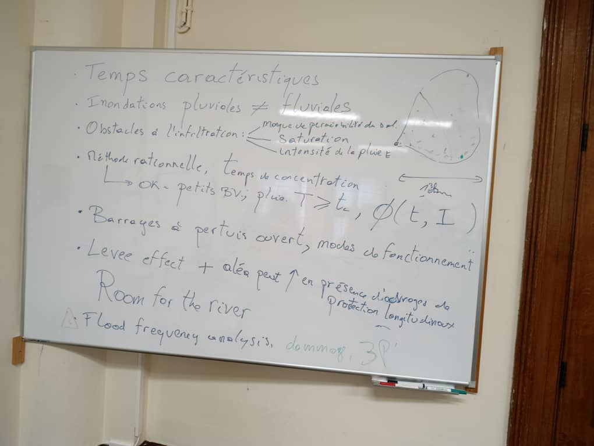
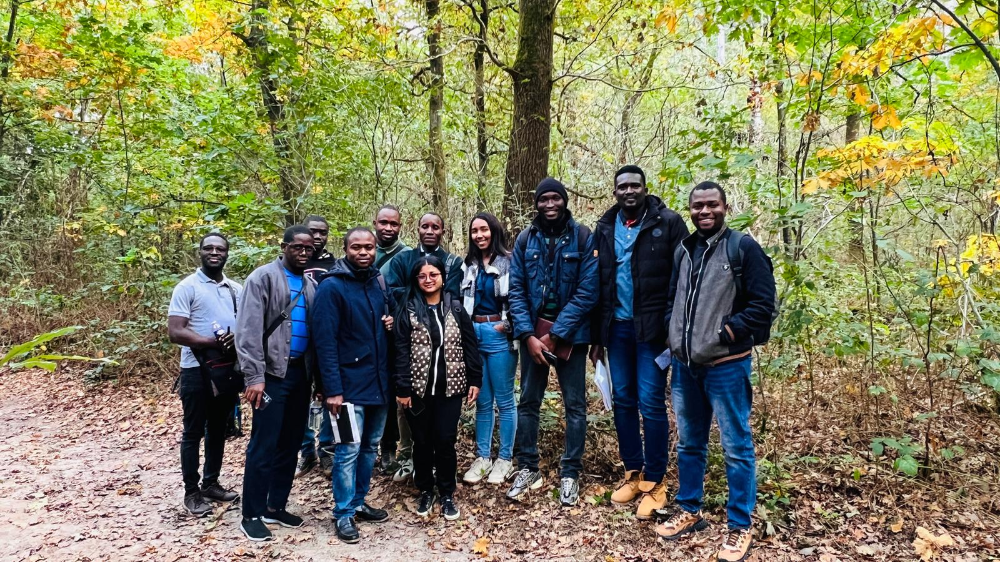
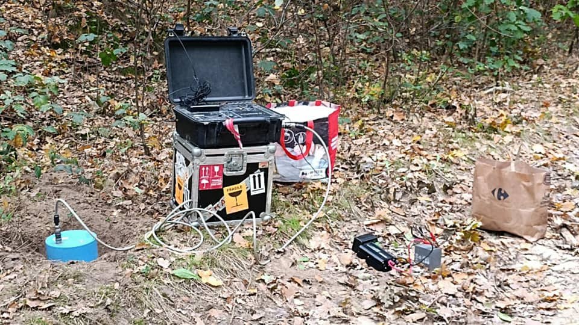
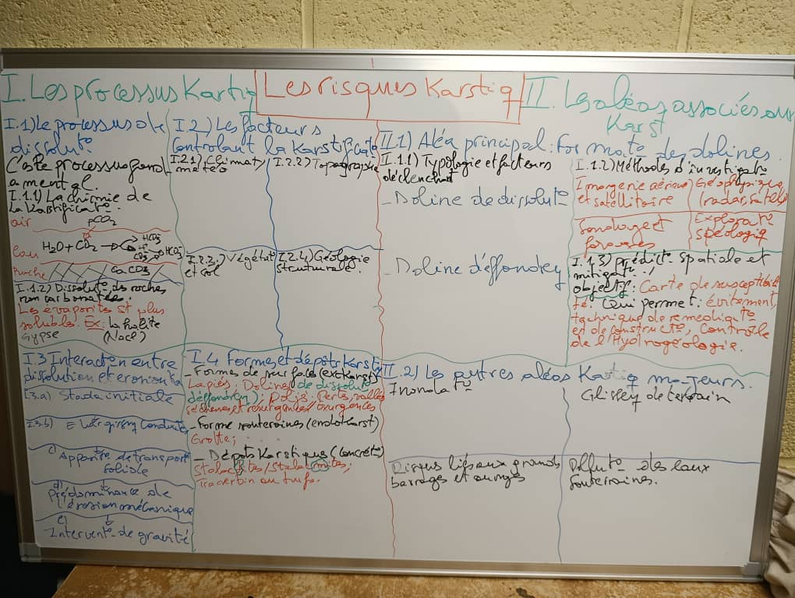
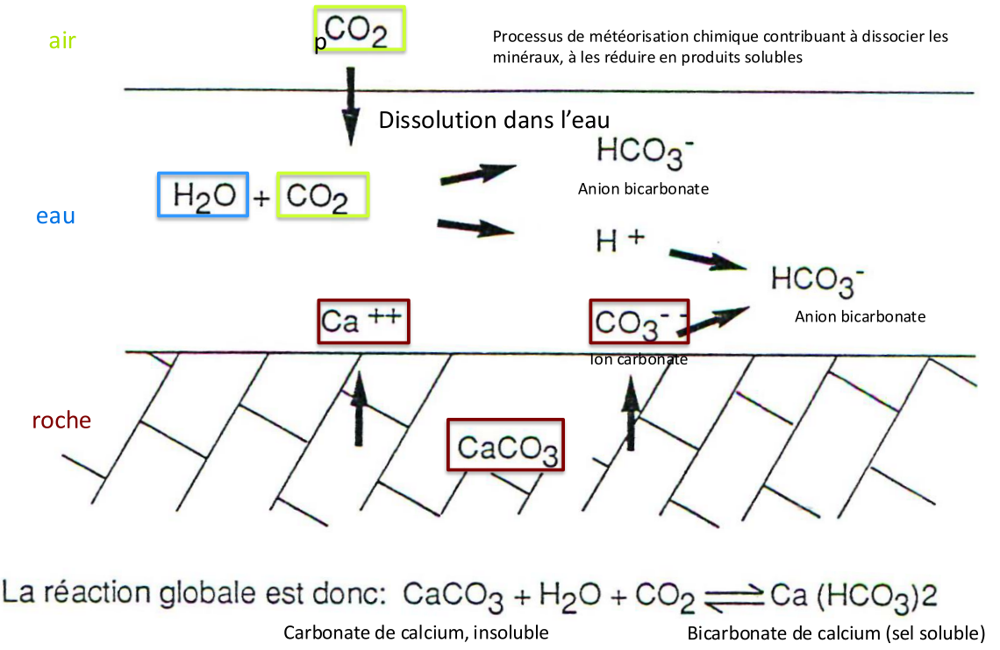

10 Les risques et catastrophes naturels
Au terme de ce cours, l’étudiant sera capable de :
comprendre les phénomènes physiques induisant les tassements et la salinisation des eaux souterraines ;
analyser une situation réelle par rapport aux processus décrits au point précédent ;
comprendre l’origine physique de différents types de crues et inondations ;
interpréter les résultats d’une analyse hydrologique fréquentielle ;
identifier les principaux types d’impacts des crues et inondations, des séismes, des éruptions volcaniques, des systèmes karstiques ;
proposer des mesures adaptées de gestion du risque inondation, sismique, karstique et volcanique ;
première évaluation des risques karstiques et volcaniques à partir de bases de données disponibles ;
comprendre la différence entre aléa et risque ;
perception des risques liés aux phénomènes rares mais avec le plus grand potentiel de destruction …
aaaaa aaaaa aaaaa aaaa
Pour ce faire, le cours est décliné en (5) cinq parties :
- Partie 1: Tassements dus aux pompages et salinisations des eaux souterraines (Prof. Serge Brouyère et Phillipe Orban)
- Partie 2: Risques de crues et inondations (Prof. Benjamin Dewals)
- Partie 3: (Prof. Hans-Balder Havenith)
- Partie 4: Risques karstiques et volcaniques (Prof. Aurelia Hubert)
- Partie 5: (Prof. Pierre Ozer)
10.1 Partie 1-1 : subsidence et tassements induits
10.1.1 Introduction
La subsidence est un phénomène d’affaissement lent et progressif de la surface de la croûte terrestre. Pour les futurs gestionnaires de risques, la maîtrise de ce concept est d’une importance stratégique capitale, car il s’agit d’un processus souvent irréversible dont les impacts, croissants à l’échelle mondiale, menacent les infrastructures et les populations. Il est essentiel de distinguer la subsidence naturelle de celle induite par les activités humaines pour cibler les stratégies de prévention et de gestion.
La subsidence naturelle est un processus géologique de grande échelle, tel que l’isostasie. Pour bien comprendre ce phénomène, il faut se rappeler que la terre est constituée de grandes plaques tectoniques qui flottent sur le manteau. Tout comme un bateau sur l’eau, ces plaques réagissent aux changements de poids. Quand on ajoute une charge, comme une accumulation de sédiments dans un bassin ou la formation d’une calotte glaciaire, la plaque tectonique s’enfonce pour trouver un nouvel équilibre. À l’inverse, la subsidence induite est directement liée aux activités humaines, notamment l’exploitation minière ou, comme nous le verrons ici, le pompage de fluides souterrains (eau, gaz, pétrole) qui déstabilise l’équilibre mécanique des sols.
L’exploitation des eaux souterraines est une cause majeure de subsidence à travers le monde, représentant une menace globale souvent sous-estimée. Les données récentes illustrent l’ampleur du risque. En effet, à l’échelle mondiale, plus de 200 régions sont menacées dans 34 pays, principalement en zones côtières où la densité de population est élevée et la géologie est constituée de sédiments meubles et récents. On estime que 635 millions de personnes, soit près de \(20 \%\) de la population mondiale, seront affectées par ce phénomène d’ici 2040.
Les impacts incluent des dégâts importants aux infrastructures et une modification irréversible des capacités de stockage des aquifères.
Les dommages aux infrastructures dépendent fortement de la nature du tassement. Le tableau suivant analyse les impacts de deux types de tassements.
| Type de Tassement | Analyse de l’Impact |
|---|---|
| Tassement uniforme | Lorsque le sol s’affaisse de manière homogène sur une grande surface, une structure bouge “en bloc”. Bien que cela puisse augmenter le risque d’inondation en zone côtière, l’impact direct sur l’intégrité de la structure est limité. |
| Tassement différentiel | En raison de l’hétérogénéité du sous-sol, le tassement est rarement uniforme. Des variations de quelques centimètres entre deux points d’un même bâtiment suffisent à le faire basculer. Les conséquences sont immédiates et concrètes : les portes et les fenêtres ne ferment plus, des fissures apparaissent dans les murs, et les réseaux enterrés comme les conduites d’eau ou de gaz se rompent. C’est ce type de tassement qui est le plus destructeur. |
Pour comprendre l’origine de la subsidence induite par pompage et pour pouvoir anticiper ses effets, il est indispensable de maîtriser quelques notions fondamentales d’hydrogéologie.
10.1.2 Principes fondamentaux d’hydrogéologie
Pour évaluer les risques liés à l’exploitation des eaux souterraines, il est crucial de déconstruire le mythe persistant des “rivières” ou “lacs” souterrains. Sauf dans le cas très particulier des milieux karstiques (roches carbonatées dissoutes), l’eau souterraine n’est pas stockée dans de grandes cavités vides, mais dans les interstices d’un milieu poreux, à la manière d’une éponge, ou dans les fissures d’un massif rocheux.
Voici les termes techniques essentiels pour comprendre ce système :
Aquifère : C’est le contenant. Il s’agit d’une unité géologique suffisamment poreuse et perméable pour pouvoir stocker et fournir une quantité significative d’eau.
Nappe aquifère : C’est le contenu. Elle désigne l’ensemble de l’eau souterraine qui circule au sein d’un aquifère.
Zone non saturée et zone saturée : Depuis la surface, on traverse d’abord une zone où les pores du sol contiennent à la fois de l’air et de l’eau (non saturée), avant d’atteindre la zone où tous les interstices sont remplis d’eau (saturée). La limite entre les deux est la surface de la nappe.
Les aquifères sont classifiés en deux grandes catégories dont les caractéristiques influencent directement les risques liés à leur exploitation.
| Type de nappe | Définition et caractéristiques |
|---|---|
| Nappe libre (non confinée) | Sa surface supérieure est à la pression atmosphérique et peut librement monter ou descendre en fonction de la recharge (pluies) ou des prélèvements. Elle est la plus facile d’accès, mais aussi la plus vulnérable aux pollutions de surface. |
| Nappe captive (confinée) | Elle est “piégée” sous une formation géologique peu perméable (argile, marne), ce qui la met sous une pression supérieure à la pression atmosphérique. Lorsqu’un forage atteint une telle nappe, le niveau d’eau remonte dans le tubage au-dessus du toit de l’aquifère. Ces nappes sont souvent exploitées car leur profondeur les protège des contaminations. En pratique, on y recourt souvent par nécessité : la nappe libre superficielle, en contact direct avec les activités humaines, est fréquemment polluée et impropre à la consommation, obligeant à forer plus profondément pour trouver une ressource de qualité. |
Le pompage d’une nappe, qu’elle soit libre ou captive, consiste à extraire l’eau via un forage. Cette action provoque une baisse locale du niveau d’eau autour du puits, créant une dépression en forme d’entonnoir appelée cône de rabattement. Ce phénomène n’est pas anodin : en modifiant le niveau d’eau, il modifie directement la pression exercée par cette eau au sein des pores du sol. C’est ce changement de pression qui constitue le lien direct avec le phénomène de subsidence.
La modification des pressions d’eau perturbe un équilibre mécanique fondamental dans le sous-sol, un processus clé que nous allons maintenant détailler.
10.1.3 La mécanique des sols : le processus de consolidation
La subsidence induite par pompage est un phénomène fondamentalement hydrogéomécanique. Le lien entre la baisse de pression de l’eau (hydro-) et l’affaissement physique des terrains (-géomécanique) est parfaitement décrit par le principe de la contrainte effective, formulé par Karl von Terzaghi, le père de la mécanique des sols.
Le Principe de Terzaghi décrit l’équilibre des forces au sein d’un sol saturé. La contrainte totale (le poids des terrains sus-jacents) est supportée à la fois par le squelette solide (les grains) et par l’eau contenue dans les pores. Cet équilibre est formalisé par l’équation :
σ = σ' + p
Où :
σ: La contrainte totale, correspondant au poids total des terrains et de l’eau au-dessus d’un point donné. Elle reste globalement constante.σ': La contrainte effective, qui est la force transmise directement “de grain à grain” par les points de contact. C’est cette contrainte qui assure la cohésion et la résistance du sol.p: La pression d’eau interstitielle (ou pression de pore), qui est la pression exercée par l’eau dans les vides du sol. Elle a tendance à “soutenir” les grains et à réduire la contrainte qu’ils subissent.
Le processus de consolidation se déclenche lorsqu’un pompage fait chuter la pression d’eau interstitielle (p). Comme la contrainte totale (σ) ne change pas, le système doit se rééquilibrer. Pour maintenir l’égalité dans l’équation de Terzaghi, une diminution de p entraîne mathématiquement et physiquement une augmentation de la contrainte effective (σ').
Cette augmentation de la contrainte transmise de grain à grain a des conséquences directes : les particules solides se réarrangent dans une configuration plus compacte, et l’eau interstitielle est expulsée des pores. Le volume total du sol diminue, ce qui se traduit en surface par un tassement. Ce phénomène est particulièrement marqué dans les sédiments à forte compressibilité comme les limons, les argiles et les tourbes. La présence de tourbe, un matériau extrêmement compressible, doit être un signal d’alerte majeur sur tout chantier. Pour exmple, un cas où le drainage d’une tranchée pour une canalisation a fait baisser le niveau d’eau dans une couche de tourbe non identifiée a été illustré. Une maison située à 100 mètres de là a subi un tel tassement différentiel qu’elle a basculé, créant une fissure si large que l’on pouvait voir le ciel au travers du mur du salon.
Le tassement est un phénomène partiellement irréversible. Pour comprendre cela, l’analogie de l’élastique est très parlante. Une déformation élastique, c’est comme tirer sur un élastique : quand on relâche l’effort, il revient à sa position initiale. C’est la part réversible du tassement, le “rebond”, qui peut être récupéré si la pression de l’eau remonte. En revanche, si l’on tire trop fort sur l’élastique, on dépasse sa limite d’élasticité et il ne revient plus à sa forme de départ : c’est la déformation plastique. Dans le sol, cela correspond au réarrangement permanent des grains. Dans la plupart des cas de subsidence, cette part plastique est prédominante, rendant l’affaissement quasi-définitif.
Les exemples concrets qui suivent illustrent de manière spectaculaire les conséquences de ces principes hydrogéomécaniques à travers le monde.
10.1.4 Études de cas : L’impact des pompages sur les grandes métropoles et en belgique
L’analyse d’études de cas est essentielle pour appréhender l’échelle des impacts de la subsidence et la diversité des contextes géologiques et humains qui favorisent son développement. Des métropoles côtières aux plaines drainées d’Europe, les conséquences du pompage des eaux souterraines sont visibles et souvent dramatiques.
Le tableau ci-dessous synthétise les données de subsidence pour plusieurs grandes villes mondiales, illustrant l’ampleur du phénomène.
| Ville | Tassement Cumulatif (m) | Vitesse de Tassement Annuelle Actuelle |
| Venise | 0.15 - 0.3 m | 1-2 mm/an |
| Mexico | 13 m | 30 cm/an |
| Bangkok | 2.1 m | 2 cm/an |
| Shanghai | 2.6 m | 1.5 cm/an (résiduel) |
| Jakarta | 4.1 m | 26 cm/an |
| Tokyo | 4.3 m | -0.3 cm/an (rebond) |
10.1.4.1 Analyse de cas emblématiques
Venise : La ville est construite sur près de 1000 mètres de sédiments lagunaires récents, une séquence de sables fins, de silts et de couches d’argiles et de tourbes très compressibles. Le pompage dans les aquifères sous-jacents a provoqué un tassement de 10 à 15 cm jusqu’aux années 1970. Bien que ralenti, le phénomène se poursuit (1-2 mm/an) et aggrave significativement la fréquence et l’intensité des inondations (“acqua alta”), un effet qui s’ajoute à celui de la montée globale du niveau des mers.
Mexico : Édifiée sur d’anciens sédiments lacustres à forte teneur organique, Mexico présente l’un des cas de subsidence les plus extrêmes au monde, avec un tassement cumulatif atteignant 13 mètres par endroits. Ces terrains très compressibles se sont compactés massivement sous l’effet du drainage et des pompages intensifs pour alimenter la métropole. Cette situation a drastiquement augmenté le risque d’inondation de la ville.
Shanghai : Confrontée à un tassement de 2,5 mètres dès 1962, la ville a mis en place une stratégie pionnière de recharge artificielle des aquifères. En réinjectant de l’eau, les autorités ont réussi à stabiliser le phénomène et même à provoquer un rebond élastique partiel. Cependant, un tassement résiduel persiste. Face aux problèmes, les zones de pompage ont été déplacées vers les faubourgs en pleine expansion, ce qui est une stratégie de gestion environnementale typique mais imparfaite : on ne fait que reporter le problème un peu plus loin.
Pays-Bas : Dans les polders, terres gagnées sur la mer, la subsidence résulte d’un double mécanisme. D’une part, le drainage et le pompage constants pour maintenir les terres au sec provoquent une consolidation mécanique des couches d’argile et de tourbe. D’autre part, l’exposition à l’air de la tourbe, riche en matière organique, entraîne son oxydation, c’est-à-dire sa décomposition et sa disparition progressive. Ce cycle auto-entretenu provoque un affaissement continu de l’ordre d’un mètre par siècle.
10.1.4.2 La situation en Belgique
Le bassin de la Haine : Dans cette région, les pompages dans un aquifère de craie sous-jacent ont provoqué des tassements différentiels spectaculaires dans les sédiments de surface (limons, argiles, tourbes). Les observations sont sans équivoque : des bâtiments ont pivoté, des sols se sont décollés des fondations, et des marches ont dû être ajoutées à des escaliers pour compenser l’affaissement. L’exemple d’une station de pompage construite sur des pieux en béton est frappant : le sol environnant s’est affaissé de 75 cm en 20 ans, laissant les pieux apparents.
Bruxelles, un cas de rebond : La capitale illustre le phénomène inverse. Au cours du XXe siècle, une intense activité industrielle, notamment brassicole, a entraîné un pompage massif et une baisse de plus de 40 mètres des niveaux d’eau, provoquant une subsidence. Avec l’arrêt de la plupart de ces activités, les pompages ont cessé et les niveaux d’eau ont commencé à remonter. Aujourd’hui, les mesures par imagerie radar satellitaire (SAR) montrent un léger soulèvement du sol, correspondant à la récupération de la fraction élastique de la déformation.
Ces exemples, bien que variés, pointent tous vers la difficulté de remédier au problème une fois celui-ci installé, ce qui nous mène naturellement à considérer les stratégies de prévention.
10.1.5 Prévention, remédiation et perspectives
Le défi principal posé par la subsidence est son caractère largement irréversible. Il n’existe pas de “solution miracle” pour restaurer l’état initial des terrains une fois que la déformation plastique a eu lieu. L’accent doit donc impérativement être mis sur la prévention, qui passe par une planification rigoureuse et une gestion intégrée des ressources en eau souterraine.
Les stratégies de remédiation, bien que nécessaires dans les zones déjà affectées, présentent des limites importantes :
Arrêt des pompages : C’est la solution la plus directe pour stopper l’aggravation de la subsidence. Cependant, sa mise en œuvre est souvent complexe sur le plan socio-économique. L’eau est un besoin primaire pour la consommation humaine, l’agriculture et l’industrie, et trouver des ressources alternatives peut s’avérer coûteux et techniquement difficile.
Réinjection d’eau : Cette technique consiste à injecter de l’eau dans les aquifères pour faire remonter la pression. Elle ne permet de récupérer que le rebond élastique, laissant une perte de volume de stockage et un tassement de surface permanents. De plus, elle comporte des risques techniques, comme le déclenchement de réactions physico-chimiques indésirables entre l’eau injectée et la roche, et reste une opération coûteuse et pleine d’incertitudes.
Face à ce constat, l’apport des technologies modernes est crucial. Les techniques de mesure géodésique de haute précision, comme l’interférométrie radar satellitaire (SAR) et le GPS différentiel (D-GPS), permettent un suivi quasi continu des moindres mouvements verticaux du sol sur de vastes territoires. Ces outils sont puissants pour la surveillance, la calibration des modèles prédictifs et la mise en place de systèmes d’alerte précoce.
En conclusion, la gestion du risque de subsidence exige un changement de paradigme. Il est impératif d’intégrer une analyse hydrogéologique et géomécanique approfondie dans toute planification d’aménagement du territoire et de développement urbain. Cette approche préventive est la seule voie durable pour protéger les infrastructures et les populations, particulièrement dans les zones côtières et à forte densité, qui sont les plus vulnérables.
Cette thématique de la gestion quantitative et mécanique des eaux souterraines est complétée par d’autres risques, notamment ceux liés à la qualité de l’eau, comme la salinisation.
10.1.6 Thématique connexe : introduction à la salinisation des eaux souterraines
La salinisation des eaux souterraines constitue un autre risque majeur lié à la gestion des aquifères, particulièrement prégnant en zone côtière. Il s’agit cette fois d’un problème de dégradation de la qualité de l’eau, où l’eau douce est progressivement remplacée par de l’eau salée, la rendant impropre à la consommation et à l’irrigation.
Ce sujet complémentaire, qui traite de l’intrusion d’eau de mer dans les aquifères côtiers sous l’effet des pompages, sera abordé en détail lors d’une session ultérieure du cours. Celle-ci sera donnée par le Professeur Serge Brouillère.
10.2 Partie 1-2 : salinisations des eaux souterraines
10.3 Partie 2: Risques de crues et inondations

10.4 Partie 3-1 : cours magistral sur les Vue d’ensemble des risques liés aux séismes et aux grands mouvements de masse
10.4.1 Introduction
Cette note de synthèse est élaborée dans le cadre du master spécialisé en gestion des risques et catastrophes. Elle a pour objectif de synthétiser les concepts clés, les méthodologies d’analyse et les stratégies de gestion relatives à deux des aléas naturels les plus significatifs : les risques sismiques et les mouvements de masse de grande ampleur. En s’appuyant sur un cadre conceptuel rigoureux, ce document explore d’abord les fondements de l’analyse des risques, puis examine en détail la dynamique propre à chaque type d’aléa, avant de présenter les approches méthodologiques pour leur évaluation et les stratégies de réduction du risque. Cette démarche structurée vise à fournir aux futurs gestionnaires les bases indispensables à une compréhension systémique et intégrée des catastrophes naturelles.
10.4.2 Fondements de l’analyse des Risques naturels
Pour analyser et gérer efficacement les risques naturels, il est impératif de maîtriser un cadre conceptuel unifié. Une terminologie précise permet de décomposer des phénomènes complexes en composantes mesurables et de communiquer de manière claire entre les différentes disciplines impliquées (géosciences, ingénierie, sciences sociales, etc.). Cette section pose les définitions fondamentales nécessaires à toute évaluation rigoureuse du risque.
10.4.2.1 Définition du risque : aléa, vulnérabilité et valeurs exposées
L’analyse moderne du risque naturel repose sur une formule conceptuelle qui dissocie le phénomène physique de ses conséquences humaines et matérielles. Le risque n’est pas l’événement lui-même, mais le résultat de son interaction avec une société. Il se définit comme le produit de trois facteurs interdépendants :
Risque = Aléa * Vulnérabilité * Valeur exposée
Dans ce cadre, le terme ‘Risque’ est défini spécifiquement comme l’impact socio-économique quantifié, représentant les pertes potentielles pour la société. Chacun de ces termes possède une signification précise :
Aléa Naturel (Hazard) : Il s’agit de la probabilité d’occurrence d’un événement naturel d’une certaine amplitude (intensité), dans un espace et un temps donnés. L’aléa est une caractéristique purement physique du milieu (par exemple, la probabilité qu’un séisme de magnitude 7 se produise sur une faille connue dans les 50 prochaines années).
Vulnérabilité : Elle représente la prédisposition des biens, des personnes ou des systèmes socio-économiques à être affectés négativement par un aléa. C’est le facteur qui mesure la fragilité d’une société face à un phénomène donné. Le concept opposé est la résilience, c’est-à-dire la capacité d’un système à résister et à s’adapter aux perturbations.
Valeur Exposée : Ce terme désigne l’ensemble des biens (bâtiments, infrastructures) et des vies humaines potentiellement affectés par un aléa dans une zone géographique donnée. Il s’agit de l’inventaire quantitatif des “enjeux”.
Un aléa très fort dans une zone désertique (valeur exposée nulle) ne génère aucun risque. Inversement, un aléa modéré dans une métropole très vulnérable (forte valeur exposée, bâtiments mal construits) peut engendrer une catastrophe majeure.
10.4.2.2 Impacts socio-économiques et évolution des catastrophes
Les conséquences d’une catastrophe naturelle se manifestent à travers un large éventail d’impacts socio-économiques, qui peuvent être directs ou indirects, et se prolonger bien au-delà de l’événement initial. Les principaux types d’impacts incluent :
Pertes de vies humaines et blessures.
Pertes de logements et augmentation du nombre de sans-abris.
Destruction des biens et des infrastructures (routes, ponts, réseaux).
Pertes de revenus et augmentation du chômage.
Perturbations des systèmes de transport et des chaînes d’approvisionnement.
L’analyse historique montre que si les grands phénomènes naturels (séismes, éruptions) ont toujours existé, l’ampleur des catastrophes a radicalement changé entre les siècles passés et l’ère contemporaine (XXe et XXIe siècles). Comme le souligne l’ouvrage Natural Hazards and Disasters, des facteurs anthropiques comme la croissance démographique et l’urbanisation non planifiée sont devenus les principaux moteurs de l’augmentation du risque. La concentration des populations et des biens dans des zones potentiellement dangereuses (zones côtières, plaines inondables, régions sismiques) a considérablement accru la vulnérabilité globale. Cette évolution est également qualitative : la nature des impacts change avec les évolutions technologiques et sociales. Par exemple, les incendies post-sismiques, qui furent une force de destruction majeure avant la Seconde Guerre mondiale (comme à San Francisco en 1906 ou Tokyo en 1923) en raison de l’usage généralisé de matériaux inflammables pour l’éclairage, sont devenus un facteur secondaire avec l’adoption de l’électricité.
Après avoir défini ce cadre général, cette note se penchera désormais sur le premier type de risque majeur : les mouvements de masse.
10.4.3 Analyse des mouvements de masse de grande ampleur
Les mouvements de masse, communément appelés glissements de terrain, constituent un risque géologique majeur, responsable de destructions considérables et de nombreuses pertes humaines à travers le monde. Souvent déclenchés par d’autres aléas, tels que des séismes ou des précipitations intenses, leur potentiel destructeur réside dans leur capacité à mobiliser d’énormes volumes de matériaux à grande vitesse. Comprendre leurs mécanismes de déclenchement et leur dynamique est donc une étape cruciale pour anticiper leurs impacts.
10.4.3.1 Mécanismes de déclenchement : causes et précurseurs
Le déclenchement d’un glissement de terrain résulte de la rupture d’un équilibre au sein d’une masse rocheuse ou meuble, lorsque les forces motrices (comme la gravité) dépassent les forces de résistance (cohésion, frottement). Ce déséquilibre peut être provoqué par une multitude de causes, que l’on peut classer en trois grandes catégories :
Causes Climatiques :
Fonte des glaciers et du permafrost, qui libère de l’eau et déstabilise les versants.
Érosion à la base d’une pente par une rivière.
Changement du niveau de la nappe phréatique suite à des pluies intenses ou prolongées.
Altération des roches.
Causes Sismiques et Volcaniques :
Les secousses sismiques, qui peuvent induire une perte de cohésion instantanée des matériaux.
Les éruptions volcaniques, qui peuvent déstabiliser les flancs de l’édifice ou générer des lahars (coulées de boue volcanique).
Causes Anthropiques :
L’activité minière (excavations, terrils).
Les constructions (routes, bâtiments) qui modifient la géométrie des pentes ou les surchargent.
La déforestation, qui réduit la stabilisation des sols par les racines.
L’étude des précurseurs est essentielle pour la mise en place de systèmes d’alerte. L’exemple du glissement de Randa (Suisse, 1991) est emblématique : après une première phase d’effondrement, une surveillance continue par extensomètre a permis de détecter une accélération des déformations et de prévoir avec succès le déclenchement de la deuxième phase, permettant une évacuation préventive.
10.4.3.2 Dynamique du mouvement et facteurs d’impact
Une fois déclenché, l’impact d’un mouvement de masse dépend de sa dynamique, qui est contrôlée par des facteurs directs et peut générer des effets indirects en chaîne.
| Facteurs d’Impact Directs | Facteurs d’Impact Indirects (Catastrophes en chaîne) |
| Volume, Runout (distance de propagation) et Vitesse sont les trois paramètres clés. Un volume plus important et une vitesse élevée augmentent considérablement le potentiel de destruction. L’exemple de l’avalanche de débris du Nevado Huascaran (Pérou, 1970) est tragiquement illustratif : déclenchée par un séisme, elle a mobilisé des dizaines de millions de mètres cubes de roche et de glace, parcourant 16 km à une vitesse calculée de 240 km/h et causant la mort de 18 000 personnes dans la ville de Yungay. | Les mouvements de masse peuvent interagir avec leur environnement et générer de nouveaux aléas : <br><br> 1. Barrage de rivières et inondations : Un glissement obstruant une vallée peut créer un barrage naturel et un lac en amont. Le barrage d’Usoy (Tadjikistan, 1911), déclenché par un séisme de M 7,4, a ainsi créé le lac Sarez. Avec une hauteur de 600 m pour un volume de 2 km³, il constitue le plus grand barrage naturel du monde, retenant un lac long de 60 km et profond de 550 m.<br><br>2. Vagues géantes (Tsunamis) : Un effondrement massif dans une masse d’eau (lac, baie, fjord) peut générer une vague dévastatrice. Le cas de Lituya Bay (Alaska, 1958) est exceptionnel : un glissement de 40 millions de m³ provoqué par un séisme a généré une vague qui a déferlé sur les pentes opposées de la baie jusqu’à une altitude de plus de 520 mètres. |
10.4.3.3 Outils d’analyse et de surveillance
L’étude de ces phénomènes complexes s’appuie aujourd’hui sur un arsenal d’outils modernes. Comme le montrent les analyses du glissement de Kainama (Kirghizistan) ou les travaux documentés dans l’Atlas du séisme de Wenchuan, les approches intègrent :
La géophysique et la sismologie pour sonder la structure interne des versants.
La télédétection (images satellite optiques et radar) pour cartographier et suivre l’évolution des instabilités sur de vastes territoires.
Les Systèmes d’Information Géographique (SIG) pour croiser les données (pente, géologie, pluviométrie) et produire des cartes d’aléa.
Les mouvements de masse étant très fréquemment déclenchés par un autre aléa majeur, les séismes, la section suivante se consacre à l’analyse de ce risque.
10.4.4 La dynamique des risques Sismiques
Les tremblements de terre comptent parmi les aléas naturels les plus destructeurs et les plus difficiles à prévoir. Leur soudaineté et la complexité des effets qu’ils engendrent en font un défi majeur pour la gestion des risques. Cette section décompose le phénomène sismique, de son origine tectonique profonde à la diversité de ses manifestations en surface, qui constituent autant d’aléas distincts.
10.4.4.1 Origine et Mesure des séismes
Les séismes trouvent leur origine dans la néotectonique, c’est-à-dire les mouvements actuels des plaques lithosphériques. La libération brutale de l’énergie accumulée par les contraintes le long de failles géologiques (zones de subduction, de collision ou de décrochement) génère des ondes sismiques qui se propagent à travers la Terre. Pour quantifier un tremblement de terre, on utilise deux échelles complémentaires qui ne mesurent pas la même chose et ne doivent pas être confondues.
| Échelle | Description | Facteurs d’influence |
| Magnitude (ex: Richter, de Moment M_w) | Mesure l’énergie libérée au foyer du séisme. C’est une valeur unique et logarithmique. La magnitude de moment (M_w), la plus utilisée aujourd’hui, est calculée à partir du moment sismique (M₀), généralement exprimé en dyne-cm, avec la formule : M_w = 2/3 log(M₀) - 10.7. |
La taille de la surface de la faille qui a rompu (A), la rigidité des roches (µ) et le déplacement moyen sur la faille (D). |
| Intensité (ex: Mercalli Modifiée) | Mesure les effets et dégâts ressentis et observés en un lieu donné. Elle décrit l’impact du séisme et varie donc en fonction de la distance à l’épicentre et des conditions locales. | La magnitude du séisme, la distance à l’hypocentre, la nature géologique du matériau de surface, le type et la qualité des constructions, et la durée des secousses. |
10.4.4.2 Les aléas sismiques associés
Un séisme ne se résume pas à une simple secousse. Il génère une série d’aléas, directs ou indirects, qui sont souvent la cause principale des destructions et des pertes humaines.
Rupture de surface : Il s’agit du décalage visible du sol le long de la trace d’une faille active. Ce phénomène peut sectionner les infrastructures (routes, pipelines, bâtiments). Le séisme de Kemin (Kirghizistan, 1911) a par exemple produit des escarpements de faille de plusieurs mètres de haut.
Liquéfaction des sols : Sous l’effet des vibrations, les sols sableux saturés en eau peuvent perdre temporairement toute leur portance et se comporter comme un liquide. Les bâtiments construits sur de tels sols peuvent alors basculer, s’enfoncer ou “flotter”, conduisant à leur effondrement.
Glissements de terrain induits : Les ondes sismiques sont un facteur de déclenchement majeur des instabilités de pente. Lors du séisme d’El Salvador (2001), le glissement de terrain de Las Collinas, situé à 120 km de l’épicentre, a enseveli une partie de la ville de Santa Tecla, causant à lui seul plus de 500 morts. Si de tels événements étaient connus, la prise de conscience de leur importance systémique a radicalement changé après le séisme de Wenchuan (2008) et ses 200 000 glissements de terrain. Cet événement a forcé un changement de paradigme dans l’évaluation des risques, faisant des aléas géologiques co-sismiques un champ d’étude central.
Tsunamis : Lorsqu’un séisme provoque un déplacement vertical important du plancher océanique (typiquement dans une zone de subduction), il peut générer une série de vagues océaniques de grande longueur d’onde. En haute mer, ces vagues peuvent se déplacer à des vitesses de 800 km/h. Les tsunamis de Sumatra (2004) et du Japon (2011) ont démontré leur potentiel de destruction catastrophique à l’échelle régionale et même transocéanique.
Effets de site : La géologie de surface peut considérablement modifier les ondes sismiques. Les sols meubles ou les bassins sédimentaires tendent à amplifier les secousses et à piéger l’énergie. L’exemple du séisme de Michoacan (1985) est emblématique : bien que son épicentre se situait à 400 km de Mexico, les dégâts les plus importants se sont concentrés dans la capitale. La ville, construite sur un ancien lac aux sédiments meubles, a subi un “effet pudding” : le bassin sédimentaire a transformé les ondes sismiques de haute fréquence provenant du socle rocheux en ondes de basse fréquence et de grande amplitude. Ces basses fréquences sont entrées en résonance avec la fréquence propre des immeubles de grande hauteur (10 à 20 étages), entraînant leur effondrement catastrophique.
La compréhension fine de ces aléas est la première étape indispensable vers leur évaluation quantitative et leur cartographie, qui seront détaillées dans la section suivante.
10.4.5 Méthodologie d’évaluation de l’aléa sismique
L’évaluation de l’aléa sismique est un processus scientifique qui vise à quantifier la probabilité et l’intensité des secousses sismiques futures pour une région ou un site donné. Cette démarche, qui combine géologie, sismologie historique et modélisation, est essentielle pour l’aménagement du territoire, la conception de normes de construction parasismiques et la préparation aux situations d’urgence. Elle s’effectue à différentes échelles, du régional (macrozonage) au local (microzonage).
10.4.5.1 Zonage sismique régional (macrozonage)
À l’échelle régionale ou nationale, l’objectif est de délimiter de vastes zones considérées comme ayant une sismicité homogène. Cette étape s’appuie sur :
L’identification et la caractérisation des failles actives.
L’analyse des catalogues de sismicité historique et instrumentale.
L’outil statistique fondamental de cette approche est la loi de Gutenberg-Richter. Cette loi empirique décrit la relation entre la magnitude (M) et le nombre (N) de séismes dans une région donnée :
Log(N) = a - bM
Elle montre qu’il existe une relation linéaire (sur une échelle log-log) entre la fréquence des séismes et leur magnitude : les petits séismes sont beaucoup plus fréquents que les grands. Cette loi permet d’estimer la probabilité d’occurrence d’un séisme d’une magnitude donnée sur une période de temps future (période de retour).
10.4.5.2 Atténuation et Scénarios Sismiques (Microzonage)
Pour passer de l’échelle régionale à l’échelle d’une ville ou d’un site spécifique, il faut affiner l’analyse en tenant compte des facteurs locaux.
Le concept d’atténuation est ici central : il décrit la manière dont l’énergie des ondes sismiques (et donc l’intensité des secousses) diminue avec la distance par rapport à la source. Des lois d’atténuation, basées sur des observations empiriques, permettent de calculer l’intensité attendue en un point pour un séisme donné.
Le scénario sismique est un outil puissant pour l’évaluation du risque en milieu urbain. Il est conçu pour répondre à une question concrète : “Que se passerait-il si un séisme d’une magnitude donnée se produisait à un endroit précis ?”. L’élaboration d’un tel scénario pour le microzonage d’une ville repose sur la combinaison de trois variables clés :
Paramètres de la source et atténuation : On définit un séisme de référence (position de la faille, magnitude) et on applique une loi d’atténuation pour calculer une carte de l’intensité des secousses à l’échelle de la ville.
Microzonage géophysique : On cartographie finement les variations locales de l’intensité dues aux effets de site. Des mesures géophysiques permettent d’identifier les zones où les sols meubles vont amplifier les secousses et de déterminer leurs fréquences de résonance.
Inventaire des bâtiments : On réalise un recensement du parc immobilier de la ville, en classifiant les bâtiments selon leur vulnérabilité structurelle (matériaux, âge, type de construction, etc.).
Le croisement de ces trois couches d’information permet de produire des cartes de dommages potentiels, identifiant les quartiers les plus à risque et guidant ainsi les politiques de prévention.
L’évaluation de l’aléa et du risque n’est cependant pas une fin en soi. Elle constitue le prérequis indispensable à la mise en place de stratégies de réduction du risque, qui sont l’objet de la dernière section.
10.4.6 Stratégies de réduction et de gestion des risques
La réduction du risque est l’objectif ultime de la gestion des catastrophes. Elle englobe l’ensemble des mesures et politiques visant à diminuer l’impact potentiel des aléas naturels sur une société. Ces stratégies peuvent agir soit sur l’aléa lui-même (lorsque c’est possible), soit, le plus souvent, sur la vulnérabilité des communautés et des infrastructures.
10.4.6.1 Le cadre d’action : prévention et remédiation
Les actions de réduction du risque peuvent être classées en deux grandes catégories, selon leur temporalité et leur cible.
| Concept | Définition | Exemples |
| Prévention | Actions visant à diminuer la probabilité de l’événement ou à réduire la vulnérabilité des biens et des personnes avant que l’événement ne se produise ou ne montre des signes d’activité. | Éviter les zones à risque (aménagement du territoire), renforcer les bâtiments (application de normes parasismiques), reboiser les pentes pour les stabiliser, former et sensibiliser les populations. |
| Remédiation | Actions menées directement sur l’aléa pendant l’événement ou après l’apparition des premiers signes d’activité, dans le but de limiter son action. | Consolidation d’un glissement de terrain actif (ancrages, drainage), construction de digues temporaires lors d’une crue, tentatives de déviation d’une coulée de lave. |
10.4.6.2 Mesures spécifiques par type de risque
Les stratégies de réduction du risque doivent être adaptées à la nature de chaque aléa.
Pour les Mouvements de Masse : Il est possible d’agir à la fois sur l’aléa et la vulnérabilité.
Action sur l’aléa (remédiation/prévention) : Des techniques de génie civil peuvent être mises en œuvre pour stabiliser une pente (drainage pour réduire la pression de l’eau, terrassements, ancrages, murs de soutènement) ou le reboisement pour une stabilisation à plus long terme.
Gestion de la vulnérabilité : La cartographie des zones à risque permet d’éviter l’urbanisation des zones les plus dangereuses. La mise en place de systèmes de surveillance et d’alerte précoce, comme les détecteurs de lahars installés sur le volcan Pinatubo (Philippines), peut permettre des évacuations à temps.
Pour les Séismes : L’action directe sur l’aléa reste aujourd’hui du domaine de la recherche fondamentale (“soulager la contrainte” sur une faille est quasi impossible). L’effort se concentre donc entièrement sur la réduction de la vulnérabilité.
Vulnérabilité structurelle : C’est le domaine du génie parasismique. Les mesures incluent le renforcement des structures existantes, l’application de codes de construction stricts pour les nouveaux bâtiments (notamment l’utilisation d’acier pour une meilleure ductilité), et l’utilisation de techniques avancées comme l’isolation sismique à la base des bâtiments.
Vulnérabilité non structurelle : Ces mesures englobent l’aménagement du territoire basé sur les cartes de microzonage pour éviter les zones à plus fort aléa (effets de site, liquéfaction), la préparation des populations (exercices d’évacuation, formation aux premiers secours, kits d’urgence) et le développement de systèmes d’alerte précoce qui, bien qu’ils ne prédisent pas le séisme, peuvent donner quelques dizaines de secondes d’alerte avant l’arrivée des ondes les plus destructrices.
La gestion efficace des risques combine ainsi l’ingénierie, la planification de l’aménagement du territoire et la préparation de la société pour créer un environnement plus sûr.
10.4.7 Conclusion
Cette note de synthèse a mis en lumière l’approche systémique indispensable à la gestion des risques sismiques et des mouvements de masse. Plusieurs points essentiels émergent. Premièrement, l’interdépendance des phénomènes est un facteur clé : un séisme peut déclencher des milliers de glissements de terrain et un tsunami dévastateur, créant des catastrophes en cascade. Deuxièmement, la distinction fondamentale entre l’aléa, phénomène physique quantifiable, et le risque, qui mesure les conséquences humaines et socio-économiques, doit guider toute action. Le risque n’est pas une fatalité, mais le produit de nos choix d’aménagement et de notre niveau de préparation.
Enfin, dans le contexte de l’Anthropocène, marqué par une pression démographique et une urbanisation croissantes dans des zones exposées, la vulnérabilité devient le principal levier d’action. La réduction des risques ne peut plus être considérée comme une simple réponse technique post-catastrophe, mais doit devenir une composante intégrale du développement durable. Construire des sociétés plus résilientes exige une combinaison d’ingénierie robuste, d’un aménagement du territoire éclairé par la science et d’une culture du risque partagée par tous les acteurs de la société.
10.5 Partie 3-2 : Compte rendu de sortie de terrain; analyse sismo-tectonique de la faille de Bree

Le jeudi 9 octobre 2025, une sortie de terrain a eu lieu dans la région de Bree en Belgique avec les étudiants du Master en Gestion des Risques et des Catastrophes à l’ère de l’Anthropocène (GRCA), promotion 2025-2026. Cette activité, organisée dans le cadre du module RISQ2015-1 Les risques et catastrophes naturels, avait pour but d’appliquer sur le terrain les notions vues en cours sur les aléas sismiques et les processus tectoniques. Le présent rapport décrit le déroulement, les observations et les enseignements tirés de cette journée. La sortie a permis de faire le lien entre la théorie et la pratique en combinant des mesures géophysiques et l’analyse d’études paléosismologiques.
10.5.1 Contexte et justifications
Le module RISQ2015-1, coordonné par la Professeure Aurelia Hubert, comprend plusieurs volets thématiques portant sur les risques hydrogéologiques, sismiques, volcaniques et karstiques La présente sortie correspond à la partie 3 du cours, assurée par le Professeur Hans-Balder Havenith, spécialiste des risques sismiques et des grands mouvements de masse. La présente sortie fait partie des quatre sorties obligatoires du programme. Il vise à permettre aux étudiants
- d’observer un site tectonique actif en Belgique ;
- de manipuler un instrument de mesure sismique (sismomètre numérique) ;
- et de comprendre les interactions entre structure géologique, aléa et vulnérabilité.
Cette approche expérimentale contribue à renforcer la formation systémique et interdisciplinaire du Master GRCA, centrée sur les dynamiques de risques dans le contexte de l’Anthropocène.
10.5.2 Équipe pédagogique et participants
Les objectifs de la sortie s’articulaient autour de trois volets :
| Rôle | Nom / Fonction |
|---|---|
| Responsable de la sortie | Prof. Hans-Balder Havenith – géophysicien, spécialiste des risques sismiques |
| Assistante | Sonya , doctorante en géophysique |
| Participants | Étudiants du Master GRCA (2025-2026) et des étudiants en Master de Géologie de l’université de Liége. |
10.5.3 Objectifs pédagogiques
| Domaine | Objectifs spécifiques |
|---|---|
| Géophysique |
|
| Géologie et tectonique |
|
| Gestion du risque |
|
10.5.4 Déroulement de la sortie
La journée s’est organisée autour en deux activités principales :
- une campagne de mesures géophysiques, et
- une analyse morphostructurale de la faille de Bree et de ses environs.
10.5.4.1 Présentation du site et localisation
Le site d’étude est localisé près de la commune de Bree, au nord-est de la Belgique (province du Limbourg). Cette zone se situe sur le bassin du graben de la Roer, segment actif du graben du Rhin inférieur, soumis à un régime tectonique extensif.
La faille de Bree constitue un escarpement faiblement incliné, visible dans le paysage sous forme de rupture topographique douce. Elle sépare des sédiments quaternaires meubles d’un socle plus ancien. Cette structure a été étudiée dans de nombreuses campagnes de tranchées paléosismologiques menées par l’Observatoire royal de Belgique, révélant une activité répétée depuis plus de 13 000 ans dont la dernière il y’a environs 3000 ans.
10.5.4.2 Debriefing et partage de supports
Le Professeur Havenith a introduit la journée par : - un rappel théorique sur les principes de la sismologie appliquée et de la mesure des ondes P et S ;
une présentation du matériel et des consignes de sécurité ;
la distribution de cartes topographiques, profils géologiques et extraits d’articles scientifiques issus des travaux sur la faille (voir annexe).
10.5.4.3 Présentation du matériel : le sismomètre numérique

Le sismomètre numérique utilisé était un modèle robuste d’ancienne génération (≈15 ans, >10 kg), composé de trois éléments principaux :
| Composant | Fonction |
|---|---|
| Capteur sismique | Boîtier contenant une masse suspendue par des ressorts souples. Lors des vibrations, la masse reste fixe par inertie tandis que le boîtier bouge. Le déplacement relatif génère un signal électrique proportionnel à la vitesse du sol. |
| Station d’enregistrement | Unité électronique de stockage sur carte mémoire, avec alimentation intégrée. |
| Antenne GPS | Synchronisation temporelle et géographique des enregistrements. |
Le Professeur a comparé ce dispositif au Tromino italien, beaucoup plus compact et performant (coût ≈ 9 000 €), désormais référence pour les mesures rapides en milieu urbain.
10.5.5 Activité 1 : réalisation d’un profil sismique
10.5.5.1 Méthodologie H/V sur bruit de fond sismique
La méthode H/V (rapport horizontal/vertical) consiste à enregistrer les micro-vibrations naturelles du sol, sans source artificielle. Elle est dite passive et non intrusive : aucune onde n’est générée manuellement. Sources des vibrations mesurées :
Naturelles : vent, houle lointaine, variations atmosphériques ;
Anthropiques : trafic routier, machines, activité humaine.
L’enregistrement simultané des trois composantes (Nord-Sud, Est-Ouest, Verticale) permet de déterminer la fréquence fondamentale du sol (f₀), liée à l’épaisseur des dépôts meubles selon la relation :
\(H = V_s/4f_o\)
où \(V_s\)est la vitesse des ondes de cisaillement. Une fréquence basse indique donc des sédiments plus épais. La méthode permet de localiser des contrastes d’impédance dans le sous-sol (interface sédiments / substratum), mais ne renseigne pas sur la présence d’eau souterraine.
10.5.6 Protocole de collecte des données
Le protocole appliqué par les étudiants comprenait :
Dégager la couche herbacée et niveler le sol.
Installer le capteur à l’horizontale à l’aide du niveau intégré.
Orienter l’un des axes du capteur vers le Nord géographique à l’aide de boussole.
Lancer l’enregistrement pour 20 à 30 minutes.
Répéter l’opération sur quatre points de mesure, espacés d’environ 50 mètres, afin de construire un profil perpendiculaire à la faille.
Les données recueillies seront exploitées via le logiciel Geopsy pour calculer les courbes H/V et identifier les variations latérales de fréquence.
10.5.7 Activité 2 : analyse géologique et caractérisation de la faille
10.5.7.1 Observations géomorphologiques
Sur le terrain, la faille se manifeste par un léger escarpement visible dans la topographie. Il s’agit d’une faille normale, typique d’un régime en extension : le compartiment supérieur s’est affaissé par rapport au compartiment inférieur. Cette géométrie traduit les mouvements verticaux responsables du modelé du relief local.
10.5.7.2 Apports des études paléosismologiques
Les tranchées ouvertes dans les années 1990-2000 ont permis de dater et quantifier les événements sismiques majeurs. Les analyses stratigraphiques montrent :
Trois séismes majeurs au cours des 13 000 dernières années ;
Le dernier événement significatif remonte à environ 3 000 ans ;
Une magnitude minimale estimée à 5.8-6.0 nécessaire pour produire une rupture en surface.
Ces résultats démontrent que, bien que l’activité actuelle soit faible, la région possède un potentiel sismique non négligeable, justifiant une surveillance continue.
Conclusion
Cette sortie de terrain a pleinement atteint ses objectifs pédagogiques en articulant apprentissage théorique, expérimentation géophysique et observation géologique.
| Aspect | Enseignement clé |
|---|---|
| Méthodologique | La méthode H/V s’est révélée simple, rapide et efficace pour repérer les contrastes sédimentaires et la position de la faille. |
| Géologique | Les tranchées paléosismologiques ont apporté une datation et une quantification précises des événements passés. |
| Stratégique | L’association H/V – tranchée illustre la complémentarité entre prospection rapide à faible coût (~1 000 €) et investigation lourde (~50 000 €), optimisant ainsi la gestion des ressources dans les études de risque. |
En définitive, cette expérience a permis aux étudiants de passer de la connaissance à la compétence, en intégrant les notions d’aléa, de vulnérabilité et de résilience dans une approche concrète et interdisciplinaire. Elle constitue une étape formatrice essentielle dans le parcours du Master GRCA, en illustrant comment les outils de la géophysique et de la géologie structurale peuvent contribuer à une évaluation scientifique et opérationnelle des risques sismiques à l’ère de l’Anthropocène.
10.6 Partie 3-3 : Compte rendu de l’analyse des glissements de terrain et de l’activité tectonique dans l’Est de la Belgique
Ce compte rendu analyse l’interaction complexe entre l’activité tectonique, la géologie locale et les glissements de terrain dans l’est de la Belgique, principalement dans les régions du Pays de Herve et de Malmédy. L’argument central est l’existence d’un lien direct et fondamental entre la zone de faille de Hockai, une structure tectonique active, et la forte concentration de glissements de terrain observés.
Les points clés sont les suivants :
La Faille de Hockai comme facteur principal : Cette faille, longue d’environ 40 km, est la cause sous-jacente de l’instabilité de la région. Elle affaiblit les formations rocheuses et sa potentielle activité sismique est un facteur déclenchant majeur pour les glissements rapides et de grande ampleur. Le potentiel sismique est estimé à une magnitude de 6,3, voire 7 en cas de rupture sur toute sa longueur.
Concentration anormale des glissements : Les glissements de terrain ne sont pas répartis de manière aléatoire, mais se concentrent quasi exclusivement à proximité immédiate de la zone de faille, alors que des pentes et des formations géologiques similaires ailleurs dans la région en sont dépourvues.
Mécanismes et facteurs aggravants : Les glissements sont favorisés par la présence de couches géologiques jeunes et meubles (argiles du Crétacé, Poudingue de Malmédy). Si l’eau joue un rôle dans les mouvements lents, les événements majeurs de rupture rapide (“cassante”) nécessitent une “secousse” sismique. Les activités humaines, telles que la surcharge des terrains par des remblais, se sont avérées capables de réactiver des glissements dormants, comme observé à Manéan.
Risques significatifs pour les infrastructures : De nombreuses infrastructures sont affectées ou menacées. Un château d’eau à Manéan a été mis hors service par précaution. Des fermes, des routes et des bâtiments subissent des dommages récurrents. Le projet d’implantation du Télescope Einstein dans cette zone, identifiée comme la plus active tectoniquement du nord-ouest de l’Europe, est jugé particulièrement risqué et malavisé d’un point de vue géologique.
10.6.1 La Faille de Hockai : le moteur de l’instabilité régionale
La faille de Hockai est l’élément géologique structurant qui explique la dynamique de la région. Son influence dépasse largement le simple cadre d’une ligne de fracture.
10.6.1.1 Caractéristiques et potentiel sismique
Extension : La faille s’étend sur une quarantaine de kilomètres, de la région de Malmédy jusqu’à Battice.
Expression Morphologique : Sa présence est marquée dans le paysage par des escarpements, des “vallées tectoniques” (vallons sans rivière érosive) et des anomalies dans le tracé des cours d’eau. La Vesdre et l’Amblève, par exemple, suivent le tracé de la faille sur plusieurs kilomètres.
Potentiel Sismique : L’analyse de la faille suggère un potentiel sismique significatif.
Un séisme de magnitude 6,3 a été estimé dans le passé, correspondant à une rupture partielle (10-15 km).
Une rupture sur l’ensemble de ses 40 km pourrait générer un séisme approchant une magnitude 7, ce qui représenterait une “catastrophe totale” pour une grande partie de la région.
10.6.1.2 Lien direct avec les glissements de terrain
La conclusion principale des observations de terrain est que la faille est le facteur prépondérant dans la localisation des glissements.
Distribution : Tous les grands glissements de terrain identifiés dans le Pays de Herve et près de Malmédy sont situés directement sur ou à proximité immédiate de la zone de faille.
Absence ailleurs : En dehors de cette zone d’influence tectonique, même sur des pentes similaires et des formations géologiques identiques (couches argileuses), aucun glissement de terrain n’est observé.
Hypothèse : La faille affaiblit la masse rocheuse et les secousses sismiques, même mineures, agissent comme le principal déclencheur des ruptures de masse importantes. L’eau seule peut expliquer des mouvements lents, mais pas les effondrements rapides et de grande envergure.
10.6.2 Analyse détaillée des sites de glissement
Plusieurs sites illustrent de manière probante l’interaction entre la faille et l’instabilité de surface.
10.6.2.1 Région de Battice
Cette zone est caractérisée par des couches géologiques jeunes (Crétacé, environ 100 millions d’années), tendres et facilement érodables, reposant sur le socle plus ancien de l’Ardenne.
Glissement de Manéan :
Contexte : Ce glissement actif est situé directement sous un château d’eau, qui n’est plus utilisé depuis plus de 25 ans par crainte d’un basculement. L’escarpement principal passe à 5-10 mètres de l’édifice.
Morphologie : Il présente un “relief moutonné” caractéristique, avec de nombreuses bosses indiquant un mouvement chaotique. Des observations (inclinaison d’un bunker de la Seconde Guerre mondiale) suggèrent un mouvement rotationnel.
Réactivation Anthropique : Une réactivation significative en 2020-2021 a été directement liée à la surcharge du terrain par une résidente. L’ajout d’environ 30 tonnes de remblais sur sa terrasse pour la niveler a provoqué le mouvement de l’ensemble du glissement, entraînant l’effondrement d’un hangar voisin.
Activité continue : Des fissures s’ouvrent régulièrement sur le site, avec des subsidences de plusieurs centimètres observées sur des périodes de six mois.
Glissements de Charneux et Timstère :
Contexte : Le village de Charneux est entièrement construit sur un vaste et ancien glissement de terrain (glissement de Timstère).
Structure : La zone est traversée par un système de plusieurs failles parallèles à la faille principale de Hockai. Le plus grand glissement est situé en face des hauteurs de Timstère.
Risque : Une forte réactivation sismique de la faille pourrait poser des problèmes majeurs pour la stabilité du village.
Observations : Un escarpement naturel, bien que partiellement nivelé par les agriculteurs, reste visible et traverse les prairies, se prolongeant jusqu’à une ferme où il cause des dommages structurels récurrents (un local en pierre a dû être reconstruit en bois, plus flexible).
10.6.2.2 Région de Malmédy
La géologie est ici différente, dominée par le “Poudingue de Malmédy”, un conglomérat de roches rouges beaucoup plus jeunes (environ 180 millions d’années) que le socle environnant (400 millions d’années), remplissant une structure effondrée appelée “graben”.
Glissement dans le Poudingue :
Anomalie : Alors que le Poudingue de Malmédy est généralement stable dans tout le graben, un glissement de terrain majeur a été identifié.
Localisation : Ce glissement est unique et se situe précisément sur le tracé de la faille de Hockai.
Découverte : Il a été découvert en 2015, après qu’une tempête en 2013 a déraciné une grande partie de la forêt qui le masquait, révélant la topographie sous-jacente.
Mécanisme : Le glissement s’est produit car la rivière a créé un vide en contrebas, et une “secousse” a été nécessaire pour provoquer la chute de cette masse rocheuse chaotique. Il ne s’agit pas d’un mouvement lent dû à la pluie.
10.6.3 Histoire Géologique et Rôle de l’Érosion Fluviale
L’histoire géologique et l’évolution des cours d’eau ont façonné le paysage actuel et préparé le terrain pour les glissements.
Le Graben de Malmédy : Cette structure est un ancien fossé d’effondrement qui s’est rempli sur des millions d’années de sédiments (galets, sables) devenus le Poudingue de Malmédy. Ces roches “molles” ont été facilement érodées.
La Capture de la Warche : La rivière Warche a joué un rôle clé.
Initialement, elle avait un autre parcours et a mis des dizaines de milliers d’années à creuser et vider les 200 mètres d’épaisseur de Poudingue, un processus beaucoup plus rapide que s’il s’était agi de roches dures comme le granite.
Pendant un temps, la rivière a été déviée de son cours le plus logique (à travers les roches tendres du graben) par la présence de la faille de Hockai, qu’elle a suivie.
Finalement, un autre ruisseau a “capturé” la Warche, la forçant à s’engager dans la pente la plus forte et à reprendre l’érosion du remplissage du graben, créant la vallée actuelle et laissant son ancienne vallée (aujourd’hui la “Vallée du Trô Maret”).
10.6.4 Risques et implications pour les infrastructures et projets
La reconnaissance de l’activité tectonique de la région a des implications directes pour la sécurité et la viabilité des infrastructures.
10.6.4.1 Infrastructures existantes
Viaduc TGV : Un immense pont pour le train à grande vitesse a été construit pour traverser une vallée tectonique sans rivière. Conçu à la fin des années 90, il repose sur des piliers en béton et acier de 2 mètres de diamètre, suggérant que les ingénieurs étaient conscients de la faiblesse des roches et du risque sismique.
Château d’eau de Manéan : Mis hors service par précaution en raison de sa proximité avec l’escarpement actif du glissement.
Centrale Hydroélectrique de Robertville : Un pipeline de 4 km achemine l’eau sous pression du barrage de Robertville vers une centrale en aval. La conduite traverse la forêt dans cette zone géologiquement complexe.
10.6.4.2 Le projet du télescope Einstein
Le projet d’installer le Télescope Einstein, un instrument de très haute précision nécessitant une stabilité absolue, est fortement critiqué d’un point de vue géologique.
Site Inapproprié : La zone choisie est décrite comme “la zone la plus active de tout le nord-ouest de l’Europe” en termes de tectonique et de glissements de terrain.
Risques Multiples : La présence de failles actives, de glissements de terrain et l’instabilité générale du sous-sol sont incompatibles avec les exigences de l’instrument. Des garages de fermiers se fissurent ; un instrument coûtant plusieurs milliards d’euros serait exposé à des risques inacceptables.
Processus de Décision : La sélection du site semble avoir été motivée par des considérations politiques plutôt que par une évaluation rigoureuse des risques géologiques, ignorant les avertissements des experts locaux.
10.7 Partie 4 : risques karstiques et volcaniques
Ce cours est subdivisé en deux parties :
Risque karstique : la première partie est consacrée aux facteurs et processus de dissolution des roches solubles, ainsi qu’aux formes et dépôts qui en résultent. La seconde partie aborde l’aléa karstique, principalement lié à la formation de dolines, mais également les aléas associés tels que les inondations, les glissements de terrain, la pollution des eaux souterraines et les problèmes spécifiques rencontrés dans les barrages, tunnels et mines.
Risque volcanique : la première partie présente les connaissances de base (magma, structure, reliefs, lois de fréquence et de durée, origine du volcanisme en relation avec la tectonique des plaques, classes d’éruptions, indice d’explosivité volcanique). La seconde partie traite de l’aléa et du risque volcanique : écoulements pyroclastiques denses, effondrements sectoriels et avalanches de débris, retombées de cendres, projectiles balistiques, coulées de lave, gaz volcaniques et explosions phréatiques. Les aléas volcaniques indirects sont également abordés. Enfin, les méthodes d’évaluation de l’aléa volcanique sont présentées, en soulignant l’importance de l’interférométrie radar et des emission de gaz.
10.7.1 Les phénomènes kartiques : processus, formes et dépôts
Cette section est la première partie sur les risques kartiques mettant en exergue l’ensemble des processus liés à la formation des Karsts.

10.7.1.1 Introduction au monde du karst
L’étude des systèmes karstiques revêt une importance stratégique croissante. Ces environnements uniques constituent des réservoirs d’eau essentiels pour une part significative de la population mondiale et présentent des aléas spécifiques qui interagissent de plus en plus avec les activités humaines. Comprendre leur fonctionnement est donc un enjeu majeur pour la gestion des ressources et la prévention des risques.
Définition du Karst : Le terme “Karst” tire son origine du nom d’un plateau calcaire situé en Slovénie, dont les paysages spectaculaires ont fait l’objet des premières études géographiques sur le sujet. Scientifiquement, le karst désigne une formation géologique, le plus souvent carbonatée, qui a été profondément modifiée par une érosion d’origine chimique, principalement la dissolution.
Roches et Karstification : Le développement des phénomènes karstiques est intimement lié à la présence de roches solubles. Les roches carbonatées, telles que les calcaires, les dolomies et les craies, sont les plus couramment associées à ces paysages. Cependant, les évaporites, comme le sel gemme (halite) et le gypse, sont également très sensibles à la dissolution et peuvent donner naissance à des karsts spectaculaires.
Distribution mondiale et locale : À l’échelle globale, les roches capables de se karstifier (roches carbonatées et évaporites) couvrent environ \(20 \%\) de la surface terrestre non englacée. En Belgique, et plus particulièrement en Wallonie, cette proportion est encore plus significative, puisque \(30 \%\) du sous-sol est constitué de roches carbonatées.
Importance hydrologique : Les systèmes karstiques sont des aquifères, c’est-à-dire des réservoirs d’eau souterraine, d’une importance capitale. La dissolution y a créé un réseau de vides, de conduits et de cavités bien plus vaste que dans d’autres types de roches, permettant de stocker et de faire circuler des quantités d’eau considérables. On estime que \(25 \%\) de la population mondiale dépend, en partie ou en totalité, de ces ressources en eau pour son approvisionnement.
Karst vs. pseudo-karst : Il est essentiel de distinguer le “karst”, dont l’origine est la dissolution chimique, du “pseudo-karst”. Ce dernier terme désigne des paysages présentant des morphologies similaires (cavités, effondrements) mais qui résultent de processus non dissolutifs, comme c’est le cas dans certains paysages volcaniques formés par des coulées de lave.
Le moteur fondamental de la formation de ces paysages, de leurs formes de surface à leurs vastes réseaux souterrains, est un processus chimique précis : la dissolution.
10.7.1.2 Le processus de dissolution

La dissolution chimique est le processus fondamental à l’origine de l’ensemble des morphologies et des dynamiques propres aux systèmes karstiques. C’est l’altération chimique de la roche par l’eau qui initie et contrôle le développement de ces environnements.
10.7.1.2.1 La chimie de la karstification
Le processus clé est la dissolution du carbonate de calcium (\(CaCO_3\)), principal constituant des calcaires, par de l’eau (\(H_2O\)) enrichie en dioxyde de carbone (\(CO_2\)). Cette réaction produit du bicarbonate de calcium (\(Ca{(HCO_2)}_2\)), un sel soluble qui est évacué par l’eau. Il est crucial de noter que cette réaction est réversible : si les conditions changent, le bicarbonate de calcium peut précipiter et redéposer du calcaire solide, créant ainsi des concrétions.
Le dioxyde de carbone est l’agent déterminant. L’agressivité de l’eau, c’est-à-dire sa capacité à dissoudre le calcaire, augmente avec sa concentration en \(CO_2\) dissous. Cette concentration dépend de la pression partielle du \(CO_2\) (\(pCO_2\)). Dans l’atmosphère, la \(pCO_2\) est d’environ \(3 x 10^{-4}\) bar. Cependant, lorsque l’eau de pluie s’infiltre à travers les sols, elle s’enrichit considérablement en \(CO_2\) produit par la respiration des racines et l’activité des micro-organismes. Dans les sols, la \(pCO_2\) peut atteindre en moyenne \(0,1\) bar, rendant l’eau d’infiltration bien plus corrosive que l’eau de pluie.
En rappel, l’air est un mélange gazeux composé principalement de diazote (~78 %) et de dioxygène (~21 %), avec des traces d’argon (~1 %) et de dioxyde de carbone (~0,04 %), ainsi que de la vapeur d’eau et d’autres gaz en très faibles quantités
Plusieurs facteurs influencent la vitesse et l’efficacité de cette réaction. Notamment :
\(pCO_2\) élevée : une plus grande quantité de \(CO_2\) dissous permet de former plus d’acide carbonique, augmentant ainsi le pouvoir de dissolution de l’eau.
\(pH\) faible (acide) : c’est une conséquence directe d’une \(pCO_2\) élevée, l’acide carbonique abaissant le \(pH\) de l’eau.
agitation faible : une eau calme limite le dégazage, c’est-à-dire la perte du \(CO_2\) dissous vers l’atmosphère, maintenant ainsi son agressivité plus longtemps.
activité biologique : la respiration des organismes vivants dans le sol est la principale source de \(CO_2\) enrichissant l’eau d’infiltration.
température faible : les gaz se dissolvent plus facilement dans une eau froide. Une température basse favorise donc la dissolution du \(CO_2\) dans l’eau, bien que cela puisse être contrebalancé par une activité biologique plus faible.
autres acides : bien que le \(CO_2\) soit l’agent principal, d’autres acides peuvent localement contribuer à la dissolution, comme l’acide sulfurique (provenant de l’oxydation de minéraux comme la pyrite) ou les acides organiques produits par les végétaux.
10.7.1.2.2 La dissolution dans les roches Non carbonatées
Les phénomènes karstiques se développent également, et de manière souvent plus rapide, dans les roches évaporitiques.
La solubilité de ces roches est bien supérieure à celle des carbonates. Par exemple, la halite (sel, NaCl) a une solubilité de \(357 g/l\), tandis que celle du gypse est d’environ \(2,65 g/l\), sa solubilité étant par ailleurs plus forte dans les régions chaudes. Cette dissolution rapide explique pourquoi les formes karstiques y sont spectaculaires mais aussi pourquoi les grandes cavités y sont plus rares, la roche étant moins compétente mécaniquement.
Ce processus chimique fondamental est cependant modulé par un ensemble complexe de facteurs environnementaux qui contrôlent son intensité et son expression dans le paysage.
10.7.1.3 Les facteurs contrôlant la Karstification
L’intensité et les formes prises par la karstification ne dépendent pas uniquement de la chimie de la dissolution. Divers facteurs géologiques, climatiques et environnementaux interagissent pour contrôler la vitesse et l’expression de ce processus, en modulant directement les conditions de la réaction chimique.
| Facteur | Analyse de son influence sur la Karsfication |
|---|---|
| Climatique et météorologique | La quantité d’eau disponible est le facteur primordial, car elle est le solvant de la réaction. Un épisode pluvieux intense illustre parfaitement ce rôle. Bien que l’arrivée massive d’eau de pluie puisse provoquer un effet de dilution (une baisse de la “dureté” de l’eau), l’augmentation spectaculaire du débit de la rivière souterraine compense largement cet effet. La quantité totale de calcaire dissous et transporté hors du système peut ainsi être cent fois supérieure lors d’une crue par rapport à une journée normale. |
| Topographique | La pente du terrain a une influence directe sur le temps de contact entre l’eau et la roche. Une pente trop forte favorise un ruissellement rapide en surface, ne laissant pas le temps à l’eau de s’infiltrer et d’agir chimiquement. À l’inverse, une pente nulle peut entraîner la stagnation de l’eau. Celle-ci atteint alors rapidement son point de saturation, ce qui bloque le processus de dissolution faute de renouvellement par une eau agressive. |
| Végétation et sols | La couverture pédologique (le sol) joue un rôle essentiel de “réacteur chimique”. Un sol et la végétation qu’il supporte enrichissent massivement l’eau d’infiltration en CO₂ pédogénique via l’activité biologique. Cette augmentation de la pCO₂ augmente directement la formation d’acide carbonique (H₂CO₃) dans l’eau, rendant celle-ci bien plus agressive et capable de dissoudre le calcaire de manière beaucoup plus efficace. |
| Géologique et Structural | La composition des roches est évidemment fondamentale. Cependant, même un calcaire très pur est relativement imperméable dans sa masse. C’est la fracturation de la roche (diaclases, failles, joints de stratification) qui est le facteur critique. Ce réseau de discontinuités préexistantes agit comme un “réseau de canalisations” initial, offrant des voies de pénétration privilégiées pour l’eau et permettant à la dissolution d’agir en profondeur et de façonner le massif de l’intérieur. |
À mesure que la dissolution chimique élargit les fissures initiales pour créer des conduits de plus en plus larges, la dynamique des écoulements souterrains se transforme. Cette évolution est une étape naturelle et critique dans le cycle de vie d’un système karstique : la vitesse de l’eau augmente au point où elle peut transporter des particules solides. Dès lors, la dissolution pure, qui dominait la phase de genèse, cède progressivement la place à des processus d’érosion mécanique qui vont radicalement changer la manière dont le paysage souterrain est sculpté.
10.7.1.4 Interaction entre dissolution et érosion mécanique
Les systèmes karstiques ne sont pas statiques ; ils évoluent au fil du temps. Une des évolutions les plus significatives est la transition d’une phase initiale dominée par la dissolution chimique pure à une phase où l’érosion mécanique devient un acteur majeur, voire prédominant.
Au commencement, l’eau s’infiltre dans des fissures très fines. La vitesse d’écoulement est extrêmement faible, bien trop lente pour transporter la moindre particule solide (argiles, sables) insoluble présente dans la roche. L’unique processus à l’œuvre est la dissolution chimique, qui transporte les éléments sous forme d’ions dissous.
L’élargissement continu des fissures par la dissolution permet à des volumes d’eau de plus en plus importants de circuler, entraînant une augmentation de la vitesse et du débit des écoulements souterrains.
Un seuil critique est atteint lorsque la vitesse de l’eau devient suffisante pour mettre en mouvement et transporter les particules solides insolubles qui ont été libérées par la dissolution de la matrice calcaire.
À un stade avancé, de véritables rivières souterraines se forment. Dans ces grands conduits, l’eau peut déjà être chimiquement saturée en calcaire, limitant la dissolution. Cependant, le débit élevé permet le transport de sables et de galets qui agissent comme des outils abrasifs, creusant et modelant les galeries par érosion mécanique. Ce processus peut alors devenir le principal agent d’agrandissement des cavités.
Lorsque les cavités atteignent des dimensions très importantes, la résistance mécanique du toit peut être dépassée. Les processus gravitaires, tels que les écroulements de voûte, deviennent alors un mécanisme majeur de modification et d’agrandissement des salles souterraines.
Ces processus combinés, agissant sur des milliers d’années, sculptent un ensemble de formes et de dépôts caractéristiques, aussi bien en surface qu’en profondeur.
10.7.1.5 Formes et dépôts Karstiques
Les processus de dissolution et d’érosion sculptent des paysages uniques. On distingue les morphologies visibles en surface, regroupées sous le terme exokarst, de celles qui se développent en souterrain, constituant l’endokarst.
10.7.1.5.1 Formes de surface (Exokarst)
Nous avons entre autres : les lapiès, dolines, Poljés, les pertes, vallées sèches et résurgences/Exsurgence …
Lapiés : ce sont des formes mineures de sculpture qui apparaissent à la surface des affleurements rocheux. Elles se présentent sous forme de rainures, de sillons ou de cavités, créées par la dissolution due au ruissellement de l’eau de pluie.
Dolines : forme la plus emblématique de l’exokarst, la doline est une dépression fermée, généralement de forme circulaire ou elliptique. On distingue deux grands types selon leur origine :
- Les dolines de dissolution se forment progressivement par une corrosion plus intense à un endroit précis de la surface, souvent en lien avec une zone plus fracturée en profondeur.
- Les dolines d’effondrement se forment brutalement lorsque le toit d’une cavité souterraine s’effondre, créant un cratère en surface.
Poljés : il s’agit de vastes dépressions karstiques à fond plat et subhorizontal, dont les dimensions (plusieurs kilomètres) sont bien supérieures à celles des dolines.
Pertes, Vallées Sèches et Résurgences/Exsurgences : ces éléments caractérisent l’hydrographie des régions karstiques. Une perte est le point où un cours d’eau de surface disparaît en s’infiltrant dans le réseau souterrain. Une vallée sèche est une vallée qui ne possède plus de cours d’eau permanent, celui-ci s’écoulant désormais en souterrain. Enfin, il est crucial de distinguer la résurgence, qui est la réapparition d’un cours d’eau de surface spécifique qui s’était préalablement infiltré en amont, de l’exsurgence, qui est l’exutoire d’un système hydrogéologique alimenté par l’infiltration diffuse de l’eau de pluie sur l’ensemble d’un bassin versant, sans cours d’eau de surface identifié en amont.
10.7.1.5.2 Morphologie souterraine (endokarst)
Les grottes sont des cavités souterraines naturelles formées par la dissolution des roches, qui constituent la manifestation la plus connue de l’endokarst.
Pour comprendre l’organisation d’un système karstique, il est utile de suivre le parcours d’une goutte d’eau. L’eau est d’abord absorbée et stockée temporairement dans la zone superficielle très fracturée de l’épikarst. Elle percole ensuite verticalement par gravité à travers la zone vadose non saturée, en suivant les fissures et conduits jusqu’à atteindre la nappe phréatique. Le niveau de cette nappe varie en fonction des pluies, créant une zone de fluctuation (épinoyée) où les conduits sont alternativement noyés et à l’air libre. Enfin, sous ce niveau, se trouve la zone saturée (phréatique ou noyée), où tous les vides sont en permanence remplis d’eau.
10.7.1.5.3 Dépôts karstiques (concrétions)
Le processus de précipitation du \(CaCO_3\) est l’inverse de la dissolution. Lorsque l’eau d’infiltration, chargée en bicarbonate de calcium, atteint une grotte, elle entre en contact avec l’air de cette cavité, dont la \(pCO_2\) est généralement plus faible que celle de l’eau. L’eau va donc “dégazer” : elle libère son excès de \(CO_2\) pour atteindre un nouvel équilibre. Ce dégazage provoque la réaction inverse de la dissolution et le dépôt de calcaire solide (\(CaCO_3\)), formant les concrétions.
Les principaux types de dépôts sont :
- Stalactites et Stalagmites : Les stalactites se forment au plafond et croissent vers le bas, à partir des gouttes d’eau qui suintent. Les stalagmites se forment sur le sol, à l’aplomb des stalactites, et croissent vers le haut à partir de l’impact de ces mêmes gouttes
- Travertins (ou Tufs) : ces dépôts se forment en surface, au niveau des résurgences. L’eau, arrivant à l’air libre, subit un dégazage rapide favorisé par l’agitation (cascades) et la photosynthèse des mousses et algues, provoquant une précipitation massive de calcaires.
En résumé, la karstification est un processus complexe qui débute par la dissolution chimique de la roche, une réaction contrôlée par des facteurs environnementaux clés comme la disponibilité en eau, la topographie et l’activité biologique des sols. Avec le temps, ce processus purement chimique évolue pour intégrer une érosion mécanique significative, sculptant ainsi des paysages de surface (exokarst) et souterrains (endokarst) uniques. Cependant, ces réseaux de vides et de conduits cachés sous nos pieds, si efficaces pour drainer et stocker l’eau, créent également une série de risques naturels et anthropiques significatifs, directement liés à leur nature souterraine.
10.7.2 Les aléas associès aux karst
Cette deuxième section présente les aléas associés aux karst.
10.7.2.1 L’Aléa principal : la formation de dolines
Parmi tous les aléas associés aux environnements karstiques, la formation de dolines est le plus fréquent, le plus répandu et souvent le plus dommageable sur le plan économique. Son caractère souvent soudain et imprévisible, combiné à une urbanisation croissante sur des terrains karstiques, en fait une préoccupation majeure pour l’aménagement du territoire et la sécurité des infrastructures.
10.7.2.1.1 Typologies et facteurs déclenchants
Les dolines peuvent être classées selon leur mécanisme de formation principal : la dissolution lente en surface, la suffosion (entraînement de particules de la couverture meuble vers les vides sous-jacents) ou l’effondrement brutal du toit d’une cavité.
L’étude de cas de la Floride est emblématique. La nature et l’épaisseur de la couverture sédimentaire au-dessus des calcaires y déterminent le type d’aléa. Là où la couverture est un sable non-cohésif, on observe des affaissements graduels (cover-subsidence), où le sable s’écoule progressivement dans les fissures du calcaire. À l’inverse, là où une couche d’argile cohésive peut former une voûte temporaire au-dessus d’une cavité, le risque est celui d’un effondrement brutal (cover-collapse) lorsque cette voûte cède soudainement.
Les activités humaines, et en particulier le pompage intensif des eaux souterraines, sont un facteur déclenchant majeur. Le pompage déstabilise le sous-sol par deux mécanismes principaux :
Perte du support hydrostatique : l’abaissement du niveau de la nappe phréatique supprime la pression de l’eau qui contribuait à soutenir le toit des cavités souterraines, augmentant ainsi les contraintes sur la roche et les sédiments de couverture.
Augmentation du gradient hydraulique : le pompage crée une forte différence de pression qui accélère les écoulements verticaux, favorisant l’érosion interne et l’entraînement des sédiments de la couverture vers les vides du réseau karstique.
10.7.2.1.2 Méthodes d’investigation et d’identification
L’étape fondamentale de toute analyse d’aléa est la réalisation d’un inventaire des dolines et des phénomènes de subsidence existants. C’est en cartographiant le passé et le présent que l’on peut anticiper le futur.
Plusieurs techniques complémentaires sont utilisées pour caractériser le sous-sol karstique.
| Technique | Utilité principale |
|---|---|
| Imagerie aérienne et satellite | Permet d’identifier et de cartographier à large échelle les dolines, qu’elles soient actives ou anciennes (paléodolines). L’analyse se base sur les formes topographiques, mais aussi sur les anomalies d’humidité du sol et de végétation qui trahissent une dépression. |
| Géophysique (radar, résistivité) | Ces méthodes non-invasives permettent de “sonder” le sous-sol pour détecter des anomalies physiques. Elles sont efficaces pour localiser des cavités, des zones de sédiments remaniés, des dolines enfouies ou la topographie irrégulière du sommet de la roche-mère sous sa couverture. |
| Sondages et forages | Fournissent des informations directes et précises sur la nature des matériaux en profondeur (sable, argile, roche, vide). Cependant, leur nature ponctuelle comporte le risque de passer à côté de cavités discrètes, même avec un maillage de forages serré. |
| Exploration spéléologique | Lorsqu’elle est possible, elle offre des informations directes inestimables sur la géométrie et l’organisation des conduits accessibles, et permet de localiser les zones de déformation active (écroulements, cheminées de suffosion). |
10.7.2.1.3 Prédiction spatiale et mitigation
L’objectif de la prédiction spatiale n’est pas de prévoir le moment exact d’un effondrement, mais de produire des cartes de susceptibilité. Ces cartes délimitent les zones où les conditions géologiques et hydrogéologiques sont les plus favorables à la formation de nouvelles dolines.
Une fois les zones à risque identifiées, plusieurs stratégies de mitigation (réduction du risque) peuvent être mises en œuvre :
Évitement : c’est la méthode la plus sûre et la plus économique. Elle consiste à interdire ou à limiter strictement les constructions et les infrastructures critiques dans les zones classées à haute susceptibilité.
Techniques de remédiation et de construction : lorsque l’évitement est impossible, des solutions d’ingénierie peuvent être appliquées. Celles-ci incluent le remplissage des cavités détectées (par injection de coulis de ciment), le renforcement des fondations (radiers, pieux ancrés dans la roche saine) ou l’utilisation de géotextiles pour “ponter” les vides potentiels.
Contrôle de l’Hydrogéologie : ces mesures visent à maintenir la stabilité du régime des eaux souterraines. Elles comprennent une gestion rigoureuse des eaux de surface pour éviter les infiltrations concentrées, un contrôle de l’irrigation agricole, et surtout, une limitation des pompages intensifs qui déstabilisent la nappe phréatique.
L’exemple du chemin de fer de Norfolk Southern dans le Tennessee illustre la complexité de la prise de décision. Face à une subsidence récurrente menaçant la voie, et malgré des solutions de remédiation moins coûteuses, le risque perçu d’un déraillement catastrophique a conduit le client à opter pour une solution beaucoup plus onéreuse mais définitive : la construction d’un “pont terrestre” sur pieux pour isoler complètement la voie ferrée des instabilités du sous-sol.
Au-delà des dolines, l’hydrographie souterraine si particulière des karsts est à l’origine d’autres aléas tout aussi graves.
10.7.2.2 Les autres aléas Karstiques majeurs
L’organisation unique du drainage dans les massifs karstiques, caractérisée par une infiltration rapide et un transit en conduits, génère des aléas hydrologiques et géotechniques majeurs, en plus du risque d’effondrement. Cette connexion directe et rapide entre la surface et la nappe phréatique, si efficace pour le drainage, rend les aquifères karstiques exceptionnellement vulnérables à la pollution, un enjeu critique étant donné que \(25\%\) de la population mondiale en dépend.
10.7.2.2.1 Inondations :
Les crues karstiques sont des crues-éclair particulièrement violentes. Lors de pluies intenses, l’eau est très rapidement absorbée, concentrée et transportée à grande vitesse dans les conduits souterrains. Lorsque la capacité d’évacuation de ce réseau est dépassée, l’eau est brutalement refoulée aux exutoires (résurgences), provoquant des inondations soudaines. La catastrophe de Nîmes (1988) n’est pas seulement le résultat de pluies extrêmes, mais le produit d’une synergie fatale entre un système de drainage karstique naturellement efficace (mais de capacité finie) et un développement urbain qui a à la fois augmenté le ruissellement (imperméabilisation des sols) et étranglé les exutoires naturels du système.
10.7.2.2.2 Glissements de Terrain
Les massifs karstiques peuvent être particulièrement prédisposés aux glissements de grande ampleur. Les plans de stratification agissent comme des surfaces de rupture potentielles, affaiblies par la dissolution le long des discontinuités. De plus, l’infiltration rapide de l’eau peut générer de fortes pressions interstitielles. La catastrophe du barrage de Vajont (1963) est un exemple tragique, où un pan entier de montagne (260 millions de m³) sur un versant karstifié a glissé dans le lac de retenue, provoquant une vague gigantesque.
10.7.2.2.3 Risques liés aux Barrages et Grands Ouvrages
La construction en site karstique pose deux défis majeurs : les fuites massives d’eau à travers les réseaux de conduits et l’instabilité des fondations. Le cas du barrage de Hales Bar, construit sur le flanc d’un anticlinal dans des calcaires du Mississippien, illustre la futilité de traiter un réseau karstique tridimensionnel complexe avec des techniques de remédiation localisées. Chaque tentative de colmatage (injection de ciment, d’asphalte) ne faisait que déplacer la pression et créer de nouvelles fuites ailleurs, menant à une bataille progressive et ingagnable contre l’hydrologie du site et conduisant finalement à son abandon. De même, la catastrophe du Lac Peigneur (1980), où un forage a percé une mine de sel sous le lac, illustre les risques liés aux dômes de sel, qui sont des structures karstiques évaporitiques.
10.7.2.2.4 Pollution des Eaux Souterraines
Les aquifères karstiques sont exceptionnellement vulnérables car ils créent un “court-circuit” entre la surface et la ressource en eau. Contrairement aux aquifères classiques où l’eau est lentement purifiée, les polluants de surface sont ici transportés directement et très rapidement vers la nappe phréatique via les conduits, avec une filtration naturelle quasi inexistante. L’étude du plateau du Larzac en est la preuve définitive : elle montre une corrélation directe entre les pratiques d’occupation des sols (agriculture, élevage) et la dégradation de la qualité de l’eau aux sources (augmentation des nitrates et chlorures), illustrant de manière saisissante la vulnérabilité de cette ressource vitale.
10.7.3 Synthèse sur le risque volcanique : des processus fondamentaux à l’évaluation des Aléas
A présent nous passons à la synthèse du cours sur les risques volcaniques. Il expose le volcanisme, phénomène naturel d’une puissance considérable qui façonne notre planète. En analysant la nature multiforme des aléas volcaniques, qu’ils soient directs et immédiats ou indirects et différés, nous chercherons à en comprendre les mécanismes et les impacts. Enfin, nous présenterons les méthodes modernes d’évaluation et de surveillance, qui sont devenues cruciales pour la mitigation des risques. Une compréhension intégrée de ces aspects est en effet indispensable pour anticiper les crises, protéger les populations vulnérables et renforcer la résilience des sociétés exposées à ce risque majeur.
10.7.3.1 Les fondamentaux du volcanisme
La compréhension du risque volcanique repose sur la maîtrise des processus géodynamiques fondamentaux. De la formation du magma dans les profondeurs du manteau terrestre à la dynamique complexe des éruptions en surface, chaque étape détermine le comportement d’un volcan et la nature des menaces qu’il représente. C’est en décryptant cette chaîne de causalité que l’on peut commencer à évaluer l’aléa.
10.7.3.1.1 Origine du volcanisme : La tectonique des plaques
Le volcanisme est intimement lié aux mouvements des plaques tectoniques. C’est principalement à leurs frontières que les conditions de pression et de température sont réunies pour permettre la fusion partielle du manteau et la genèse du magma. Trois contextes géodynamiques majeurs expliquent la quasi-totalité du volcanisme terrestre.
Volcanisme de divergence : Au niveau des dorsales océaniques et des rifts continentaux, l’écartement de deux plaques tectoniques provoque un amincissement de la lithosphère. Ce phénomène entraîne une remontée des roches chaudes du manteau qui, soumises à une décompression, entrent en fusion partielle. Le magma ainsi généré s’infiltre à travers les failles pour former une nouvelle croûte, un processus appelé accrétion.
Volcanisme de subduction : Lorsqu’une plaque océanique dense plonge sous une autre plaque (océanique ou continentale), elle transporte avec elle une grande quantité d’eau. En s’enfonçant dans le manteau, cette eau est libérée, hydratant les roches du manteau sus-jacent et abaissant considérablement leur point de fusion. Le magma qui en résulte remonte à travers la plaque supérieure, alimentant les chaînes de volcans qui forment les arcs volcaniques, comme la célèbre “Ceinture de feu du Pacifique”.
Volcanisme de point chaud : Certains volcans apparaissent loin de toute limite de plaque. Leur origine est attribuée à des panaches de magma fixes, provenant des profondeurs du manteau, qui percent la lithosphère en mouvement. À mesure que la plaque se déplace au-dessus du point chaud, une chaîne de volcans se forme, dont seul le plus récent, situé à l’aplomb du panache, est actif. L’archipel d’Hawaï en est l’exemple le plus emblématique.
10.7.3.1.2 Structure, magma et reliefs volcaniques
L’anatomie d’un volcan typique se compose de plusieurs éléments clés :
La chambre magmatique : un réservoir situé à plusieurs kilomètres de profondeur où le magma s’accumule et évolue chimiquement.
La cheminée volcanique : le conduit principal qui assure le transit du magma de la chambre magmatique vers la surface.
Le cratère ou la caldeira : la dépression sommitale où débouche la cheminée. Les caldeiras sont de vastes structures d’effondrement formées suite à la vidange de la chambre magmatique lors d’éruptions majeures.
La composition chimique du magma, et en particulier sa teneur en silice (SiO2), est le facteur déterminant de son comportement et du type d’éruption qui en résulte.
| Type de Magma | Caractéristiques et Comportement |
| Basalte (<52% SiO2) | Très fluide, pauvre en silice. Le dégazage aisé mène à des éruptions effusives (coulées de lave) et forme des volcans boucliers aux pentes douces. |
| Andésite (52-66% SiO2) | Pâteux et de viscosité intermédiaire. Le dégazage difficile provoque une activité explosive significative, formant des stratovolcans aux pentes fortes. |
| Rhyolite (>66% SiO2) | Très visqueux et riche en silice. Le magma obstrue la cheminée, menant à une accumulation de pression extrême et à des activités explosives catastrophiques, formant des dômes de lave. |
10.7.3.1.3 Dynamique et classification des éruptions
La dynamique éruptive est directement contrôlée par la viscosité du magma et sa teneur en gaz. On distingue deux grands types d’éruptions :
Éruptions effusives (Hawaïenne, Strombolienne) :
Associées à des magmas fluides (basaltiques).
Le dégazage se fait de manière relativement aisée et continue.
Caractérisées par des coulées de lave étendues et des fontaines de lave.
Éruptions explosives (Vulcanienne, Péléenne, Plinienne) :
Associées à des laves visqueuses (andésitiques à rhyolitiques) qui piègent les gaz.
La pression des gaz s’accumule jusqu’à un point de rupture, provoquant des explosions violentes.
Caractérisées par la formation de panaches de cendres s’élevant à des dizaines de kilomètres d’altitude et la génération d’écoulements pyroclastiques dévastateurs (nuées ardentes).
Pour quantifier la taille d’une éruption, les volcanologues utilisent l’Indice d’Explosivité Volcanique (VEI). Il s’agit d’une échelle logarithmique allant de 0 à 8, basée principalement sur le volume de produits émis et la hauteur du panache éruptif. Une augmentation d’un point sur l’échelle correspond à une augmentation d’un facteur 10 de l’explosivité. La fréquence des éruptions suit une loi statistique de type Gutenberg-Richter, ce qui signifie qu’il y a un grand nombre de petites éruptions et très peu de très grosses éruptions catastrophiques.
Ces processus fondamentaux donnent naissance à une grande diversité de phénomènes dangereux, que nous allons maintenant analyser en détail.
10.7.3.2 Les aléas volcaniques directs
Les aléas directs sont les manifestations les plus immédiates et souvent les plus violentes d’une éruption. Ils représentent une menace mortelle pour les zones proximales du volcan, où les vitesses, les températures et les forces mises en jeu dépassent toute capacité de survie. Leur seule mitigation efficace est l’évacuation préventive des zones exposées.
10.7.3.2.1 Les écoulements pyroclastiques denses
Considéré comme l’aléa volcanique le plus important, un écoulement pyroclastique (ou nuée ardente) est un aérosol dense et brûlant de gaz et de particules volcaniques dévalant les pentes du volcan à des vitesses prodigieuses. Atteignant des températures de 300 à 800°C et des vitesses pouvant dépasser 200 m/s, ces écoulements anéantissent tout sur leur passage. Ils peuvent remonter des pentes, franchir des barrières topographiques de plusieurs centaines de mètres de haut, et même traverser des étendues d’eau.
Trois principaux mécanismes peuvent les générer :
L’effondrement d’une colonne éruptive : Lorsque le panache volcanique devient trop dense pour être soutenu par la poussée des gaz, il s’effondre sous son propre poids.
La déstabilisation d’un dôme de lave : L’accumulation de lave visqueuse au sommet du volcan crée une structure instable qui peut s’effondrer gravitationnellement.
Les explosions latérales (blasts) : Une décompression brutale du système magmatique, souvent initiée par un effondrement de flanc, peut projeter un flux horizontal dévastateur.
Le pouvoir destructeur de ces écoulements est illustré par des catastrophes historiques :
Montagne Pelée (1902) : Une nuée ardente issue de l’explosion du dôme de lave a anéanti la ville de Saint-Pierre en Martinique, causant 30 000 morts.
Mont St. Helens (1980) : Un glissement de flanc a déclenché un “blast” latéral qui a dévasté 400 km² de forêt à une vitesse atteignant 1080 km/h.
Pinatubo (1991) : L’effondrement de la colonne éruptive d’une éruption de VEI 6 a généré des écoulements si volumineux qu’ils ont comblé certaines vallées sous 200 mètres de dépôts.
10.7.3.2.2 Les effondrements de flanc et avalanches de débris
Les édifices volcaniques sont intrinsèquement instables. Ils sont construits par un empilement de matériaux peu consolidés (laves, cendres) et sont fragilisés par une fracturation intense et l’altération hydrothermale. Ces conditions rendent leurs flancs susceptibles de s’effondrer, générant des avalanches de débris.
Ces avalanches sont caractérisées par leur extrême mobilité. Elles peuvent parcourir jusqu’à 85 km depuis leur source et, grâce à leur énergie cinétique, sont capables de remonter des pentes. En obstruant les vallées, elles peuvent former des barrages naturels, créant des lacs. L’effondrement du flanc du Mont St. Helens en 1980 a ainsi créé un lac de 8 km de long.
10.7.3.2.3 Les retombées de cendres (Tephra) et projectiles balistiques
Cet aléa est celui qui possède la plus grande étendue spatiale, pouvant affecter des régions situées à des milliers de kilomètres du volcan. Il faut distinguer les projectiles balistiques (blocs, bombes), qui retombent à proximité du cratère, des retombées de cendres fines, dispersées sur de vastes étendues par les vents.
Les dangers multiples liés aux cendres sont :
Effondrement des structures : Le poids des cendres, surtout lorsqu’elles sont saturées d’eau, peut provoquer l’effondrement des toits. Lors de l’éruption du Pinatubo, environ 800 personnes sont décédées hors de la zone d’évacuation directe à cause de ce phénomène.
Impacts sur la santé et l’agriculture : Les cendres peuvent contaminer les pâturages et empoisonner le bétail (par exemple, par le fluor en Islande). L’inhalation des fines particules de silice peut causer des affections respiratoires graves, comme la silicose.
Perturbation des infrastructures : Les cendres provoquent des courts-circuits, contaminent les ressources en eau et représentent un danger majeur pour l’aviation, ce qui a mené à la création des centres de conseil sur les cendres volcaniques (VAAC).
10.7.3.2.4 Les coulées de Lave
Les coulées de lave sont généralement lentes, ce qui permet l’évacuation des populations. Cependant, elles détruisent tout sur leur passage et rendent les terres couvertes inhabitables et improductives pour des siècles. Le Nyiragongo (République Démocratique du Congo) représente un cas exceptionnel. Ce volcan produit une lave très fluide qui peut s’écouler à des vitesses atteignant 100 km/h, notamment lorsque des fissures s’ouvrent sur ses flancs. En 2002, une de ces coulées a envahi une partie de la ville de Goma.
10.7.3.2.5 Les Gaz volcaniques
Les volcans émettent une variété de gaz, dont les plus dangereux sont le dioxyde de carbone (CO2), le dioxyde de soufre (SO2) et la fluorine. Leur impact peut être à la fois local et global.
Impact local : Le CO2, plus dense que l’air, peut s’accumuler dans les zones basses et provoquer l’asphyxie. La catastrophe du lac Nyos au Cameroun en 1986, où une libération massive de CO2 a tué 1700 personnes, en est une illustration tragique.
Impact global : Le SO2 injecté dans la stratosphère se transforme en aérosols d’acide sulfurique qui réfléchissent le rayonnement solaire, provoquant un refroidissement du climat. L’éruption colossale du Tambora en 1815 a ainsi conduit à une baisse significative des températures mondiales, faisant de 1816 “l’année sans été”.
Les conséquences d’une éruption ne s’arrêtent cependant pas à ses manifestations directes ; elles peuvent déclencher une cascade d’effets secondaires, parfois plus meurtriers encore.
10.7.3.3 Les aléas volcaniques indirects et à long terme
Les aléas indirects résultent de l’interaction entre les produits d’une éruption et les éléments de l’environnement, tels que l’eau, la pluie ou la glace. Ils peuvent se manifester longtemps après la fin de l’activité éruptive principale et affecter des zones très éloignées du volcan, souvent densément peuplées.
10.7.3.3.1 Les Lahars : les Coulées de boue volcaniques
Un lahar est une coulée de boue à haute concentration en sédiments volcaniques, formée par la remobilisation de dépôts pyroclastiques par de l’eau, que ce soit via de fortes pluies ou la fonte rapide de neige et de glace.
Les lahars sont souvent plus meurtriers que les aléas directs pour plusieurs raisons : leur fréquence élevée, leur capacité à parcourir de très longues distances dans les vallées peuplées, et leur pouvoir destructeur immense qui emporte et ensevelit tout sur son passage.
Deux exemples illustrent dramatiquement ce risque :
Nevado del Ruiz, Colombie (1985) : Une éruption de faible intensité a fait fondre une partie du glacier sommital, déclenchant un lahar qui a parcouru 104 km. Il a complètement enseveli la ville d’Armero, causant la mort de 23 000 personnes.
Pinatubo, Philippines (post-1991) : Pendant des années après l’éruption, les pluies de mousson ont systématiquement remobilisé les énormes quantités de cendres, générant des lahars dévastateurs.
Un phénomène similaire, le Jökulhlaup, est une inondation glaciaire brutale provoquée par une éruption sous-glaciaire, comme celle de l’Eyjafjallajökull en Islande en 2010.
10.7.3.3.2 Les tsunamis volcanogènes
Un tsunami peut être généré par un événement volcanique lorsqu’un effondrement de grande ampleur d’un édifice volcanique dans la mer déplace un volume d’eau massif. Ce phénomène, bien que rare, est particulièrement meurtrier : environ 17% de toutes les victimes historiques du volcanisme sont attribuables aux tsunamis.
L’exemple emblématique reste celui du Krakatoa (Indonésie) en 1883. L’effondrement de l’île volcanique a généré un tsunami dont les vagues ont atteint 30 mètres de hauteur, tuant 36 000 personnes sur les côtes de Java et Sumatra. Ce phénomène s’est répété en 2019 avec l’effondrement partiel du volcan Anak Krakatau.
10.7.3.3.3 Les impacts sociaux et environnementaux
Les conséquences d’une éruption majeure s’étendent bien au-delà de ses effets physiques. À long terme, elles incluent souvent des famines, causées par la destruction des récoltes, et des épidémies, liées à la dégradation des conditions d’hygiène dans les camps de réfugiés. De plus, des aléas peuvent exister même sur des volcans considérés comme inactifs. En 1998, le passage de l’ouragan Mitch sur le volcan Casita (Nicaragua) a déclenché un lahar massif sur ses flancs, causant 2500 morts sans aucune activité éruptive associée.
Face à cette diversité complexe de menaces, la mise en place de stratégies d’évaluation et de surveillance robustes est une condition indispensable à la réduction des risques.
10.7.3.4 L’évaluation et la surveillance des aléas volcaniques
La réduction du risque volcanique n’est possible qu’à travers une approche proactive fondée sur une surveillance continue et multidisciplinaire. L’objectif est de détecter les signaux précurseurs qui annoncent la remontée du magma et les changements d’état d’un volcan. Ces informations sont capitales pour permettre une alerte précoce et une gestion de crise efficace.
10.7.3.4.1 Principes de la réduction du risque
La gestion du risque volcanique repose sur quatre piliers fondamentaux et interdépendants :
Compréhension du passé : Analyser l’histoire éruptive du volcan pour élaborer des scénarios d’aléas plausibles et délimiter les zones potentiellement affectées.
Surveillance instrumentale : Déployer un réseau d’instruments pour mesurer l’état du volcan, établir sa ligne de base au repos, et détecter tout changement significatif.
Planification d’urgence : Recenser les populations et les infrastructures exposées, et élaborer des plans d’évacuation clairs et des stratégies de réponse.
Communication : Assurer un flux d’information constant, transparent et efficace entre les scientifiques, les autorités civiles, les médias et le public.
10.7.3.4.2 La surveillance sismologique et géodésique
La surveillance sismique vise à enregistrer et analyser la sismicité volcanique. On distingue les séismes volcano-tectoniques (fracturation des roches) et les signaux de longue période (mouvement des fluides). En cartographiant la localisation de ces séismes dans l’espace et le temps, les volcanologues peuvent physiquement tracer le parcours du magma ascendant à travers la croûte terrestre.
La surveillance de la déformation (géodésie) mesure les déplacements du sol. L’accumulation de magma provoque un gonflement (inflation) de l’édifice, tandis que sa vidange entraîne un affaissement (déflation). Des techniques comme le GPS et les inclinomètres quantifient ces déformations.
10.7.3.4.3 L’Analyse géochimique : le langage des gaz
La mesure en continu des gaz volcaniques est un outil puissant pour détecter les changements dans le système magmatique.
Le flux de dioxyde de soufre (SO2) est souvent directement relié à la vigueur de l’activité.
Le rapport CO2/SO2 est un précurseur particulièrement pertinent. Au Stromboli (Italie) en 2007, une augmentation massive de ce rapport a précédé de plusieurs semaines une éruption paroxysmale.
L’exemple du Pinatubo en 1991 est emblématique. Une augmentation rapide du flux de SO2, suivie d’une chute brutale, a été interprétée comme le signe que le dégazage était bloqué, indiquant une éruption explosive imminente. Cette analyse a été décisive pour déclencher l’évacuation massive et réussie des populations.
10.7.3.4.4 L’Interférométrie radar (InSAR) : une vision satellitaire
L’InSAR (Interferometric Synthetic Aperture Radar) est une technique satellitaire qui mesure les déformations du sol avec une précision centimétrique en comparant la phase de deux images radar d’une même zone prises à des moments différents. Une étude sur les volcans indonésiens a démontré sa valeur exceptionnelle :
L’analyse InSAR a révélé un soulèvement (inflation) précurseur d’environ 8 cm entre 2007 et 2009 sur plusieurs volcans (Sinabung, Kerinci, Slamet) avant leurs éruptions.
Cette capacité à détecter des signes d’activité à l’échelle d’un arc volcanique entier fait de l’InSAR un outil précieux pour identifier les volcans potentiellement actifs, permettant ainsi de cibler plus efficacement les efforts de surveillance au sol.
10.8 Conclusion
Le risque volcanique est un phénomène complexe et dynamique, résultant de l’interaction entre des processus géologiques puissants et des sociétés humaines vulnérables. Les aléas qu’il engendre sont multiples, allant des manifestations directes et brutales comme les écoulements pyroclastiques, aux effets indirects et persistants tels que les lahars ou les impacts climatiques. Si les éruptions elles-mêmes ne peuvent être empêchées, une approche intégrée de la surveillance est la clé pour anticiper les crises et en mitiger les conséquences. En combinant la sismologie, la géodésie, l’analyse des gaz et les techniques satellitaires de pointe comme l’InSAR, il est aujourd’hui possible de décrypter les signaux précurseurs d’un réveil volcanique. C’est cette capacité à prévoir qui permet de transformer une catastrophe potentielle en une crise gérée, protégeant ainsi les vies et les moyens de subsistance des populations vivant à l’ombre des volcans.